Leo Gao Stella Biderman Sid Black Laurence Golding
Travis Hoppe Charles Foster Jason Phang Horace He
Anish Thite Noa Nabeshima Shawn Presser Connor Leahy
EleutherAI
contact@eleuther.ai
近期研究表明，提高训练数据集的多样性能够增强大规模语言模型的一般跨领域知识与下游泛化能力。基于这一认识，我们提出 The Pile：一个面向大规模语言模型训练的 825 GiB 英文文本语料库。The Pile 由 22 个多样化的高质量子集构成，既包含已有子集，也包含新构建的子集，其中许多来自学术或专业来源。我们在 The Pile 上评估 GPT-2 和 GPT-3 未经调优时的表现，发现这些模型在许多组成部分上表现不佳，例如学术写作。相反，在 The Pile 上训练的模型在 The Pile 的所有组成部分上均显著优于在 Raw CC 和 CC-100 上训练的模型，同时在下游评估中也取得了更好的表现。通过深入的探索性分析，我们为潜在用户记录了数据中可能引发担忧的方面。我们公开了构建该数据集所使用的代码。1
通用语言建模近期取得的突破，展示了在大规模文本语料库上训练超大模型对于下游应用的有效性（Radford et al., 2019; Shoeybi et al., 2019; Raffel et al., 2019; Rosset, 2019; Brown et al., 2020; Lepikhin et al., 2020）。随着该领域持续扩大语言模型训练规模，对高质量海量文本数据的需求也将不断增长（Kaplan et al., 2020）。
语言建模对数据不断增长的需求，使大多数现有的大规模语言模型转向 Common Crawl，以获取大部分或全部数据（Brown et al., 2020; Raffel et al., 2019）。虽然在 Common Crawl 上训练已被证明有效，但近期研究表明，数据集多样性能够带来更好的下游泛化能力（Rosset, 2019）。此外，已有研究表明，大规模语言模型仅需某个新领域中相对少量的训练数据，就能有效获取该领域的知识（Rosset, 2019; Brown et al., 2020; Carlini et al., 2020）。这些结果表明，相比仅在少数数据来源上训练的模型，将大量规模较小、质量高且多样化的数据集混合在一起，可以改善模型的一般跨领域知识与下游泛化能力。
为满足这一需求，我们推出 The Pile：一个为大规模语言模型训练设计的 825.18 GiB 英文文本数据集。The Pile 由 22 个多样化的高质量数据集构成，既包括成熟的自然语言处理数据集，也包括若干新推出的数据集。除了可用于训练大型语言模型，The Pile 还可以作为一个覆盖面广的基准，用于评估语言模型的跨领域知识与泛化能力。
我们推出了从以下来源构建的新数据集：PubMed Central、ArXiv、GitHub、FreeLaw Project、Stack Exchange、美国专利商标局、PubMed、Ubuntu IRC、HackerNews、YouTube、PhilPapers 和 NIH ExPorter。我们还推出了 OpenWebText2 和 BookCorpus2，分别是原始 OpenWebText（Gokaslan and Cohen, 2019）与 BookCorpus（Zhu et al., 2015; Kobayashi, 2018）数据集的扩展。
此外，我们纳入了若干已有的高质量数据集：Books3（Presser, 2020）、Project Gutenberg（PG-19）（Rae et al., 2019）、OpenSubtitles（Tiedemann, 2016）、英文 Wikipedia、DM Mathematics（Saxton et al., 2019）、EuroParl（Koehn, 2005）和 Enron Emails 语料库（Klimt and Yang, 2004）。为了补充这些数据集，我们还推出了——（接原文第 2 页）
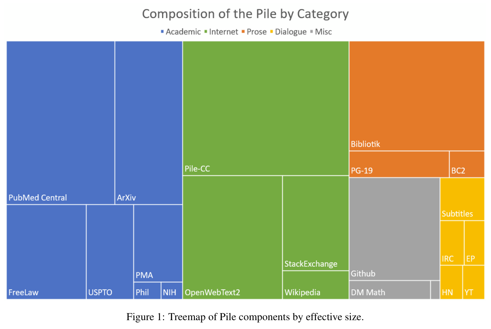
——Common Crawl 的一个新的过滤子集 Pile-CC，其提取质量得到了改善。
通过分析，我们确认 The Pile 与纯 Common Crawl 数据存在显著差异。此外，我们的评估表明，现有 GPT-2 和 GPT-3 模型在 The Pile 的许多组成部分上表现不佳，而在 The Pile 上训练的模型显著优于使用原始与过滤后的 Common Crawl 训练的模型。作为性能评估的补充，我们还对 The Pile 内的文本进行了探索性分析，以详细展示数据的情况。我们希望，对 The Pile 构建方式和特征的广泛记录能够帮助研究者就潜在下游应用作出明智决策。
最后，我们公开了 The Pile 各组成数据集的预处理代码，以及构建其他版本的代码。2为了支持可复现性，我们还尽可能详细地记录了对每个数据集以及 The Pile 整体所做的全部处理。有关各数据集处理方式的更多细节，请参见第 2 节和附录 C。
本文的核心贡献如下：
The Pile 由 22 个子数据集构成，如表 1 所示。遵循 Brown et al.（2020）的做法，我们提高了高质量组成部分的权重；在完整遍历 The Pile 一次时，Wikipedia 等部分高质量数据集最多会被遍历 3 次（“epoch”）。（本句跨原文第 2—3 页，已在此合并。）
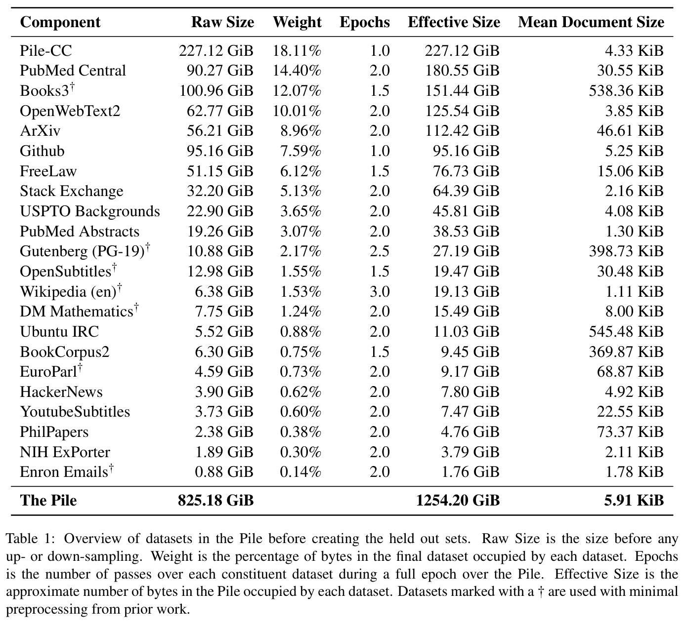
关于每个数据集构建方式的详细信息见附录 C。
Common Crawl 是从 2008 年起收集的网页抓取数据，包含原始网页、元数据和提取文本。由于数据集未经充分处理，Common Crawl 的优势是包含来自不同领域的文本，但代价是数据质量参差不齐。因此，使用 Common Crawl 通常需要精心设计的提取与过滤流程。我们基于 Common Crawl 构建的数据集 Pile-CC 使用 jusText（Endrédy and Novák, 2013）对 Web Archive 文件（包含页面 HTML 的原始 HTTP 响应）进行提取，得到的输出质量高于直接使用 WET 文件（提取后的纯文本）。
PubMed Central（PMC）是 PubMed 在线生物医学论文库的一个子集，由美国国家生物技术信息中心（NCBI）运营，为近五百万篇出版物提供开放的全文访问。PMC 收录的大多数出版物都较新；依据 NIH 公共访问政策，自 2008 年起，所有 NIH 资助的研究都必须被收录。我们纳入 PMC，希望它能够有益于医学领域的潜在下游应用。
Books3 是一个图书数据集，源于 Shawn Presser 提供的 Bibliotik 私有 tracker 内容副本（Presser, 2020）。Bibliotik 包含小说与非小说类图书，其规模比我们第二大的图书数据集（BookCorpus2）大近一个数量级。（本句跨原文第 3—4 页，已在此合并。）
我们纳入 Bibliotik，是因为图书对于长程上下文建模研究和连贯叙事具有不可替代的价值。
OpenWebText2（OWT2）是一个通用网页抓取数据集，受到 WebText（Radford et al., 2019）和 OpenWebTextCorpus（Gokaslan and Cohen, 2019）的启发。与原始 WebText 类似，我们将 Reddit 帖子的净赞数用作外链质量的代理指标。OpenWebText2 包含截至 2020 年的 Reddit 帖子中的更新内容、多种语言的内容、文档元数据、多个数据集版本以及开源复现代码。我们将 OWT2 纳入，作为一个高质量通用数据集。
ArXiv 是一个自 1991 年起运营的研究论文预印本服务器。如图 10 所示，arXiv 论文主要来自数学、计算机科学和物理领域。我们纳入 arXiv，希望它能够提供高质量文本和数学知识，并有益于这些领域研究中的潜在下游应用。ArXiv 论文使用 LaTeX 编写，这是一种在数学、计算机科学、物理以及部分相邻领域中常用的排版语言。训练能够生成 LaTeX 论文的语言模型，可能会给研究界带来巨大帮助。
GitHub 是一个大型开源代码仓库语料库。GPT-3（Brown et al., 2020）的训练数据并未包含任何专门收集的代码数据集，却能够生成看似合理的代码补全；受这一能力启发，我们纳入 GitHub，希望改善代码相关任务的下游表现。
Free Law Project 是一个在美国注册的非营利组织，为法律领域的学术研究提供资料访问与分析工具。其组成部分 CourtListener3提供来自联邦和州法院的数百万份法律意见书的批量下载。完整数据集包含法律诉讼的多种信息形式，包括案卷、法官的书目信息和其他元数据；不过，由于全文条目丰富，我们专门聚焦于法院意见书。这些数据完全属于公共领域。
Stack Exchange Data Dump4包含 Stack Exchange 网络中所有用户贡献内容的匿名化集合。Stack Exchange 是一组以用户提问和回答为中心的热门网站。它是规模最大的公开问答对资料库之一，覆盖从编程、园艺到佛教的广泛主题。我们纳入 Stack Exchange，希望改善下游模型在不同领域的问答能力。
USPTO Backgrounds 是一个由美国专利商标局授权专利的背景章节构成的数据集，源于该局发布的批量档案。5典型的专利背景会阐明发明的一般背景，概述技术领域，并为问题空间建立框架。我们纳入 USPTO Backgrounds，是因为它包含大量针对应用主题、面向非技术受众的技术写作。
Wikipedia 是语言建模中高质量文本的标准来源。除了提供高质量、干净的英文文本之外，它还具有说明性散文的写作形式，并覆盖许多领域，因此十分有价值。
PubMed Abstracts 包含 PubMed 中 3,000 万篇出版物的摘要。PubMed 是美国国家医学图书馆运营的在线生物医学论文库。虽然 PMC（见第 2.2 节）提供全文访问，但其覆盖子集明显有限，并且偏向较新的出版物。PubMed 还整合了 MEDLINE，将生物医学摘要的覆盖范围扩展到 1946 年至今。
3 https://www.courtlistener.com/
4 https://archive.org/details/stackexchange
5 https://bulkdata.uspto.gov/
Project Gutenberg 是一个西方经典文学数据集。我们使用的具体派生数据集 PG-19 由 Project Gutenberg 中 1919 年以前的图书构成（Rae et al., 2019），其风格不同于更现代的 Books3 和 BookCorpus。此外，PG-19 数据集已被用于长距离上下文建模。
OpenSubtitles 是 Tiedemann（2016）收集的电影和电视节目英文字幕数据集。字幕既是自然对话的重要来源，也能帮助理解散文以外的虚构作品形式，这可能有助于剧本写作、演讲稿写作和互动叙事等创意写作生成任务。
DeepMind Mathematics 数据集包含代数、算术、微积分、数论和概率等主题的数学问题集合，其格式为自然语言提示（Saxton et al., 2019）。大型语言模型的主要弱点之一，是在数学任务上的表现（Brown et al., 2020）；这可能部分源于训练集中缺乏数学问题。通过明确纳入一个数学问题数据集，我们希望提高在 The Pile 上训练的语言模型的数学能力。
BookCorpus2 是原始 BookCorpus（Zhu et al., 2015）的扩展版本。BookCorpus 是一个广泛使用的语言建模语料库，由“尚未出版作品的作者”所写的图书构成。因此，BookCorpus 不太可能与由已出版图书构成的 Project Gutenberg 和 Books3 有显著重叠。BookCorpus 也常用于训练语言模型（Radford et al., 2018; Devlin et al., 2019; Liu et al., 2019）。
Ubuntu IRC 数据集源于 Freenode IRC 聊天服务器上所有 Ubuntu 相关频道的公开聊天日志。6聊天日志数据提供了对实时人际互动进行建模的机会，这些互动所具有的自发程度，通常在其他社交媒体形式中并不常见。
EuroParl（Koehn, 2005）是一个多语言平行语料库，最初为机器翻译而推出，但也已用于 NLP 的其他若干领域（Groves and Way, 2006; Van Halteren, 2008; Ciobanu et al., 2017）。我们使用撰写本文时的最新版本，包含 1996—2012 年欧洲议会使用 21 种欧洲语言进行的议事记录。
YouTube Subtitles 数据集是一个从 YouTube 人工生成的隐藏字幕中收集文本而得到的平行语料库。除了提供多语言数据，YouTube Subtitles 还是教育内容、流行文化和自然对话的来源。
PhilPapers7数据集由开放获取的哲学出版物构成，来自加拿大西安大略大学数字哲学中心维护的国际数据库。我们纳入 PhilPapers，是因为它涵盖广泛的抽象、概念性论述，而且其文章包含高质量学术写作。
NIH 资助项目摘要通过 ExPORTER8服务，提供获资助申请的批量数据资料库，覆盖 1985 财年至今。我们纳入这一数据集，是因为它包含高质量科学写作的实例。
Hacker News9是创业孵化器和投资基金 Y Combinator 运营的链接聚合网站。用户提交被定义为“任何能满足智识好奇心的内容”的文章，但所提交文章往往集中于计算机科学与创业主题。用户可以评论所提交的文章，从而形成讨论和批评这些文章的评论树。我们会抓取、解析并纳入这些评论树，因为我们认为它们提供了有关小众主题的高质量对话与辩论。（末句跨原文第 5—6 页，已在此合并。）
6 https://irclogs.ubuntu.com/
7 https://philpapers.org/
8 https://exporter.nih.gov/
9 https://news.ycombinator.com
Enron Emails 数据集（Klimt and Yang, 2004）是一个有价值的语料库，常用于研究电子邮件的使用模式。我们纳入 Enron Emails，是为了帮助理解电子邮件通信这一形式；这种形式通常不存在于我们的其他数据集中。
虽然 The Pile 最初被设想为大规模语言模型的训练数据集，但它对多个不同领域的覆盖也使其适合作为评估数据集。在本节中，我们介绍如何将 The Pile 用作一个覆盖面广的语言模型基准评估数据集。
The Pile 提供训练、验证和测试划分。验证与测试部分各包含 0.1% 的数据，采用均匀随机抽样。虽然这一比例远小于大多数数据集，但数据集的庞大规模使验证集与测试集各自仍超过 1 GiB。我们强调，虽然我们已努力对 The Pile 内的文档进行去重（见第 D.2 节），训练、验证和测试划分之间仍可能存在重复文档。
我们推荐的指标是每个 UTF-8 编码字节的比特数（BPB）。将 The Pile 用作评估指标时，相比每字符比特数或 PPL，每字节比特数更合适，因为它不受不同 tokenization 方案的影响，而且 Unicode 中字符的计量存在歧义。对于给定的负对数似然 loss \(\ell\)，每字节比特数计算为 \(\mathrm{BPB}=(L_T/L_B)\log_2(e^\ell)=(L_T/L_B)\ell/\ln(2)\)，其中 \(L_T\) 是以 token 计的数据集长度，\(L_B\) 是以 UTF-8 编码字节计的数据集长度。我们发现，在整个 The Pile 上，\(L_T/L_B\) 为 0.29335 个 GPT-2 token/字节；各数据集特定的 \(L_T/L_B\) 值见表 7。
我们使用 GPT-2（Radford et al., 2019）和 GPT-3（Brown et al., 2020）计算 The Pile 各组成数据集的测试集 PPL，如图 2 所示。我们使用所有可用版本的 GPT-2，以及通过 OpenAI API 提供的全部四个版本的 GPT-3。由于使用 OpenAI API 存在成本，我们对大多数组成数据集仅在各自测试集的十分之一上评估。我们将报告的 PPL 换算为每个 UTF-8 编码字节的比特数（BPB）。需要强调的是，我们通过独立评估每个数据集内的各篇文档来计算 PPL，而不是像在大语料库上计算 PPL 的常见做法那样，将所有文档拼接起来。
PPL 计算的完整细节见附录 E.2。
不出所料，较大的语言模型通常比较小的模型取得更低的 PPL。近期研究越来越关注语言模型的经验 scaling laws（Kaplan et al., 2020; Henighan et al., 2020）。因此，我们研究了 GPT-2 与 GPT-3 模型系列在 The Pile 上进行 PPL 评估时的 scaling law。GPT-3 模型系列的 scaling law 关系如图 2 所示。10图中的最佳拟合直线系数为 -0.1674，截距为 2.5516。
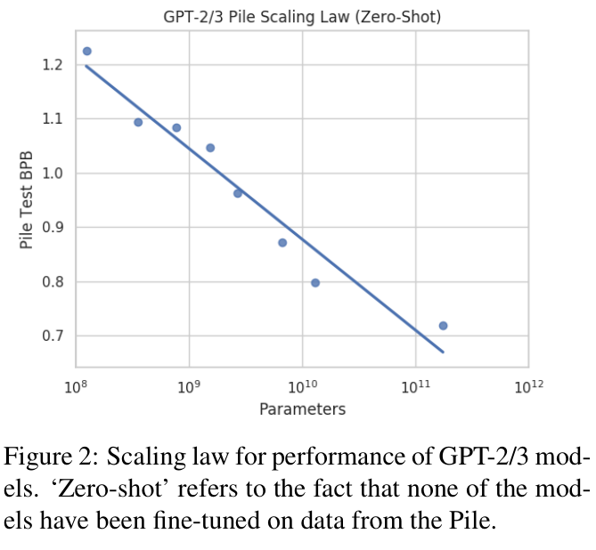
有趣的是，虽然 GPT-2 和 GPT-3 未在 The Pile 上训练，但仍然呈现出清晰的 scaling law，而且没有边际收益递减。我们推测，这源于这些模型固有的泛化能力。我们将更严格的零样本 scaling laws 分析留待后续研究。（末句跨原文第 6—7 页，已在此合并。）
10虽然 OpenAI API 中 GPT-3 模型的规模尚未公布，但这里我们假定 ada、babbage、curie 和 davinci 分别对应 2.7B、6.7B、13B 和 175B 参数模型。
确定 GPT-3 在哪些组成部分上表现不佳，可以告诉我们哪些 The Pile 组成部分与 GPT-3 训练所用的文本分布（网页和图书）差异最大。因此，这些组成部分尤其适合作为补充 GPT-3 训练数据的候选。这些结果对于确定未来 The Pile 迭代应侧重哪些类型的数据集，也具有价值。
由于不同数据集的熵不同，直接比较 GPT-3 在不同 The Pile 组成部分上的 PPL，并不能准确反映相对表现。理想情况下，我们应在 The Pile 上从头训练一个 GPT-3 模型，再比较其与原始 GPT-3 在各数据集上 loss 的差异。受资源限制，我们改用一个在 The Pile 上从头训练的 GPT-2 模型（见第 4 节），构建代理度量。为了构建这一代理指标，我们首先测量每个组成部分上从 GPT-2-Pile 模型到 GPT-3 的改善幅度。随后，我们将 OpenWebText2 上的变化设为零，对结果进行归一化。计算方式如下：
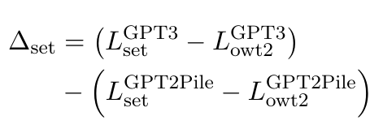
由于 GPT2-Pile 同时在 OWT2 和被评估的数据集上训练，我们预计 \(\Delta_{\mathrm{set}}\) 中的第二项反映两个数据集内在难度的差异。因此，\(\Delta_{\mathrm{set}}\) 的总值反映了：相对于 OWT2，被评估数据集对 GPT-3 更难多少，再减去这两个任务的相对难度。由于 GPT-3 在与 OWT2 非常相似的数据上训练，这为我们提供了一个代理指标，衡量如果 GPT-3 在 The Pile 上训练，其表现会改善多少。
结果见图 3。作为合理性检查，我们观察到，包含在 GPT-3 训练集中或与之极其相似的数据集（Books3、Wikipedia（en）、Pile-CC 和 Project Gutenberg），在我们的指标上得分接近零。
GPT-3 似乎在以下数据集上表现不佳：PubMed Central、PubMed Abstracts 和 ArXiv 等研究或学术写作数据集；FreeLaw、HackerNews 和 USPTO Backgrounds 等特定领域数据集；以及 GitHub 和 DM Mathematics 等主要包含不同于自然语言的文本的数据集。此外，大多数数据集上的改善幅度小于 OpenWebText2。因此，我们预计，在 The Pile 上训练的 GPT-3 规模模型，在研究相关任务、软件任务与符号操作任务上会显著优于基础模型。此外，这一实验也提供了证据，表明 The Pile 的大多数组成部分并不与主要基于网页的 GPT-3 训练数据重复。
我们指出，这一指标只是相似性的代理指标，可能受到数据集特定规模效应的混杂影响。虽然我们的结果大体符合预期，但也有一些令人困惑的结果，例如 GPT-3 优于 GPT-2 Pile 的那些数据集。我们推测，GPT-3 对这些数据集学得足够好，以至于显式在它们上训练并不会明显改善模型表现。对这些效应更严格的分析留待后续研究。
为确认 The Pile 对改善语言建模质量的有效性，我们基于 Brown et al.（2020）的模型，在不同数据集上训练架构相同、参数量为 13 亿的模型，并使用 WikiText 与 LAMBADA 任务作为语言建模能力的基准进行评估。我们还报告在 The Pile 上的结果，以衡量更广泛的跨领域泛化能力。
为确保不同规模数据集之间的比较公平，我们采用与 Brown et al.（2020）相同的 13-gram 重叠过滤方法，清除所有评估集实例，并将数据下采样至 40GB，以控制数据集规模。由于控制了数据集规模，我们强调，这一评估对 CC-100（en）是宽松的，因为它实际上只有 The Pile 大约三分之一的规模。
我们比较以下数据集：The Pile、CC-100 数据集的英文部分11（Wenzek et al., 2019; Conneau et al., 2020），以及仅保留英文的原始 CC WET 文件样本。（本句跨原文第 7—8 页，已在此合并。）
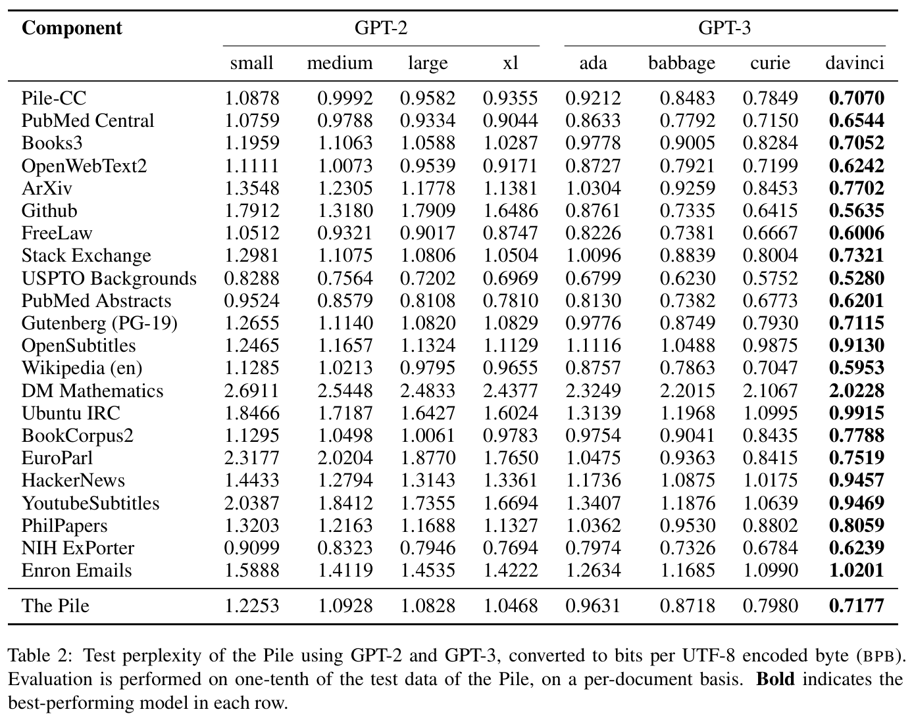
在传统语言建模基准上，The Pile 在 WikiText 上取得显著改善，而在 LAMBADA 上的变化可以忽略。不过，在 The Pile 上训练的模型，在 The Pile 的全部组成部分上均显著优于使用 Raw CC 和 CC-100 训练的模型，如表 4 所示。这说明，在 The Pile 上训练的模型具有更强的跨领域泛化能力，同时不会牺牲传统基准上的表现。
各数据集上相对 CC-100 的改善幅度见图 4。不出所料，在 Pile-CC 上几乎没有改善。然而，在 ArXiv、PubMed Central、FreeLaw 和 PhilPapers 等学术数据集上，The Pile 训练的模型显著优于另外两个模型。它在 GitHub 和 StackExchange 等编程相关数据集上也取得了显著改善；在 EuroParl 上的改善源于另外两个数据集都缺乏多语言文本；在 DM Mathematics 上的改善则表明数学能力显著增强。
令人意外的是，尽管原始 Common Crawl 在 LAMBADA 和 WikiText 上明显落后于 CC-100，但在 The Pile BPB 上表现更好。我们推测，这是由 CC-100 使用的基于 PPL 的过滤造成的：先在 Wikipedia 上训练一个语言模型，再丢弃 PPL 过高或过低的全部数据。这实际上会丢弃任何与 Wikipedia 过于相似或过于不同的数据，严重限制所收集数据的多样性。这一结果表明，未来使用 Common Crawl 的研究应谨慎过滤，以保留其多样性。
本节介绍数据集的结构统计，为 The Pile 提供更粗粒度的统计信息。在第 6 节中，我们会更深入地调查并记录 The Pile 数据集内的文本内容。（末句跨原文第 8—9 页，已在此合并。）
11数据来自 http://data.statmt.org/cc-100/。
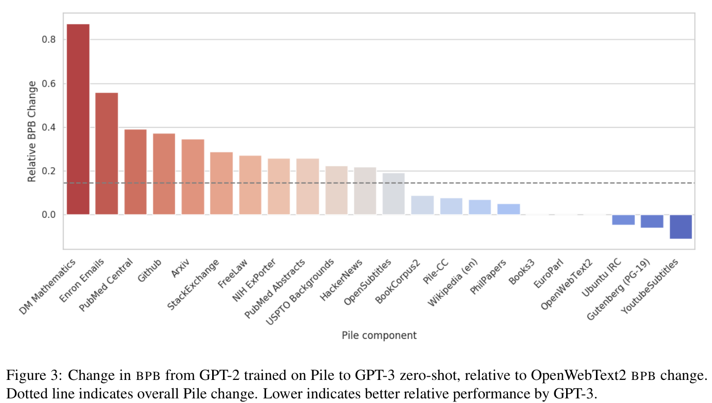
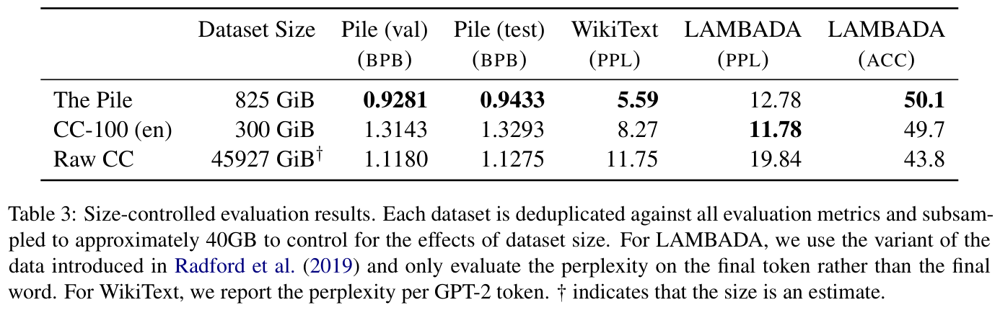
每个数据集都由大量文档组成。我们分析文档长度的分布，以及使用 GPT-2 tokenizer 时每个 token 的字节数，以为消融实验提供背景。
虽然 The Pile 中大多数文档较短，但非常长的文档形成了一条长尾（图 5）。
由于 GPT-2 BPE tokenizer 在 WebText 上训练，平均每个 token 的字节数也可以非常粗略地反映 The Pile 各组成部分与 WebText 在句法上的差异。例如，NIH ExPorter、OpenWebText2 和 Books3 等数据集主要由与 WebText 分布相似的普通文本构成，因而每个 token 的字节数较多。另一方面，每个 token 字节数最低的许多数据集，主要由非文本内容（GitHub、ArXiv、Stack Exchange 和 DM Mathematics）或非英语语言（EuroParl）构成。
虽然全球只有 13% 的人口说英语，但绝大多数 NLP 研究都针对英语。对于 The Pile，我们采用了与 Brown et al.（2020）所用数据集类似的方法，主要关注英文，同时在自行收集数据时并未显式过滤其他语言。评估一个多语言数据集时，我们的主要纳入标准是：仅凭其中的英文部分，是否就值得将它纳入。我们计划在后续工作中构建 The Pile 的完整多语言扩展。（末句跨原文第 9—10 页，已在此合并。）
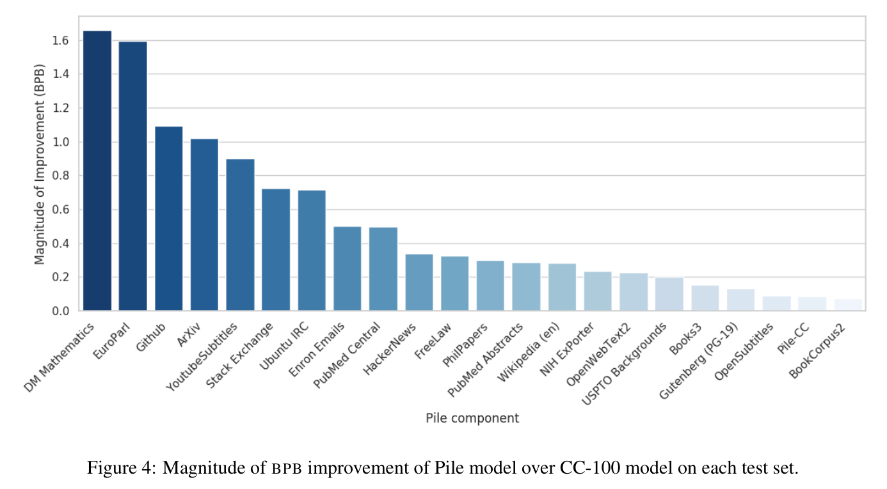
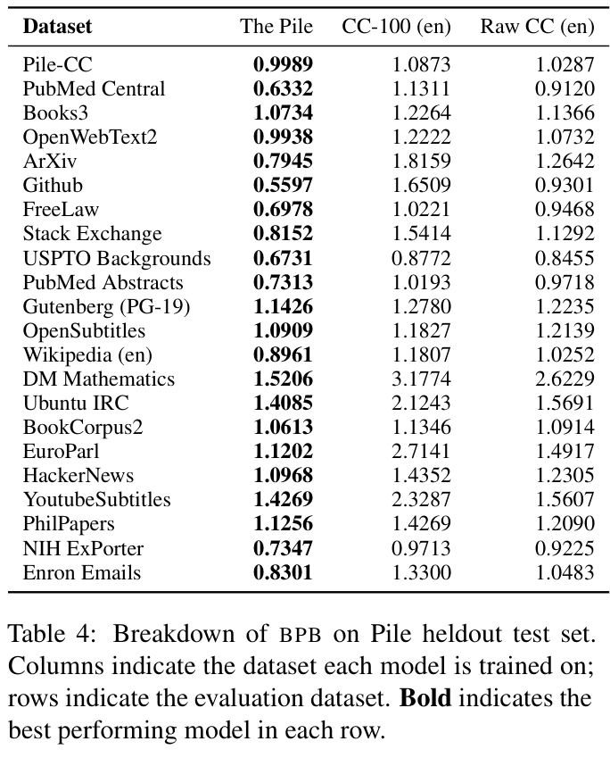
使用 fasttext（Suárez et al., 2019a），我们确定 The Pile 中英文占 97.4%。我们指出，由于语言识别存在问题，尤其是在罕见语言上（Caswell et al., 2020），这一方法只能提供英文内容占比的粗略估计，无法对低资源语言得出可靠结论。
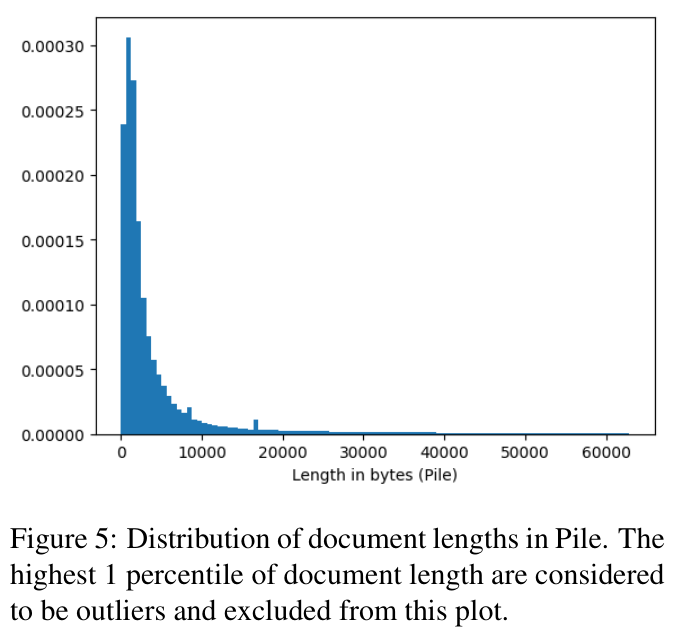
随着机器学习研究规模扩大，人们开始审视模型训练所使用的日益庞大的数据集（Prabhu and Birhane, 2020; Biderman and Scheirer, 2020）。
虽然 AI 伦理与偏见研究中已经提出这一问题（Hovy and Spruit, 2016; Hutchinson et al., 2020; Blodgett et al., 2020），但它尚未成为语言建模界关注的重点。尽管探索和记录数据集问题的研究不断涌现（Gebru et al., 2018; Bender and Friedman, 2018; Jo and Gebru, 2020），尚无任何面向超大语言模型训练的数据集得到其创建者的认真记录。12因此，我们的分析有两个目标：回应有关 The Pile 的伦理顾虑，并推广和常态化与 AI 伦理文献开展对话的实践。（后两句跨原文第 10—11 页，已在此合并。）
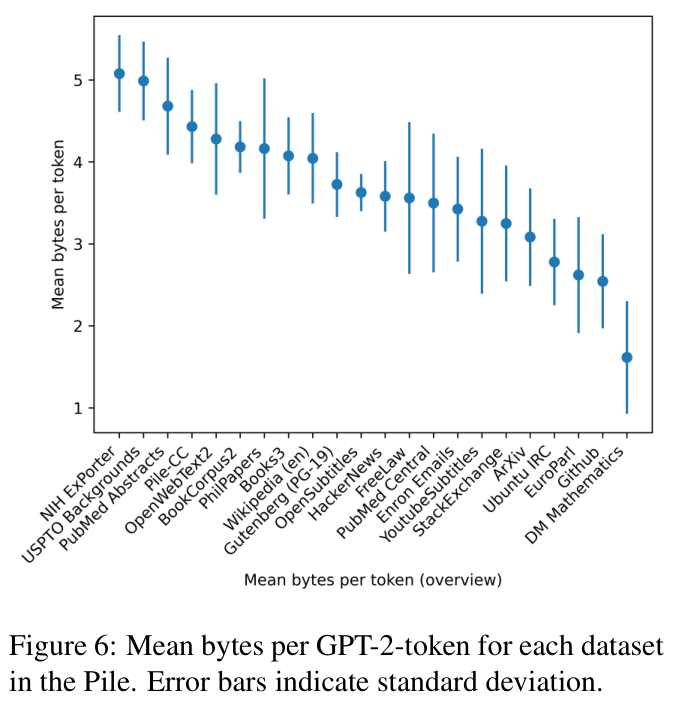
自然语言处理技术应用广泛，可以用于极其不同的情境。因此，哪些数据适合训练、哪些不适合，可能随应用情境而产生巨大差异。在我们看来，最佳做法是记录数据集中可能引发担忧的方面，而不是将其删除，13尤其考虑到 The Pile 的目的是训练通用语言模型。因此，我们开展记录工作的主要目标，是帮助 NLP 研究者作出明智决策。
为记录 The Pile，我们选择实施方法论研究者和伦理研究者提出的两个框架。第一个是 datasheets 方法（Gebru et al., 2018），这是一种通用方法，得到多位方法论研究者的推荐（Raji and Yang, 2019; Biderman and Scheirer, 2020），而且实践者似乎比其他替代方法更经常使用它（Seck et al., 2018; Costa-jussà et al., 2020; Thieme et al., 2020）。第二个是 data statements 方法（Bender and Friedman, 2018），它专为自然语言处理提出，受到 NLP 社区的良好认可。我们的 datasheet 和 data statement 将放在保存 The Pile 代码的 GitHub 仓库中，也将作为独立文档发布到 arXiv（Biderman et al., 2021; Biderman, 2021）。
除了 datasheet 和 data statement 之外，还有一些这些文档未涵盖的信息，可能对训练语言模型的人有所帮助。在本节余下部分，我们会更详细地调查并记录其中一些额外背景信息。
为更好地了解 The Pile 覆盖的具体主题，我们对各组成部分进行了主题建模分析。我们使用 Gensim（Rehurek et al., 2011），以在线方式（Hoffman et al., 2010）同时在 The Pile 验证集的每个组成部分上训练 16 主题的潜在狄利克雷分配模型（Blei et al., 2003）。针对这项分析，我们将 The Pile 过滤为仅含英文。随后，我们计算源自 Common Crawl 的主题模型（Pile-CC）在其他组成部分文档集上的 PPL。这样，我们可以粗略衡量 The Pile 的各部分在多大程度上包含 Common Crawl 未充分覆盖的主题。
图 7 展示了这些跨组成部分的 PPL，其中一条竖线表示 Pile-CC 主题模型在 OpenWebText2 文档上评估得到的 PPL。选择这一组成部分作为比较基线，理由与前面的评估类似：它的来源方式与 Common Crawl 类似，都是开放网页的过滤抓取数据，因此预计具有相近的主题分布。虽然 Pile-CC 内容具有一定多样性，但 The Pile 的其他若干组成部分在主题重点上与它有很大差异；GitHub、PhilPapers 和 EuroParl 上较高的 PPL 就体现了这一点。
我们还记录了各组成部分的 LDA 模型所推断的主题簇，并在附录 C 中提供。正如预期，虽然规模较大的 CC 派生组成部分本身包含政治、教育、体育和娱乐等多样化内容，但与 The Pile 的其他组成部分进行定性比较时，它缺失的内容簇就显现出来。值得注意的是，涵盖编程、逻辑、物理和法律知识的数据类型似乎大体缺失。（后两句跨原文第 11—12 页，已在此合并。）
12Brown et al.（2020）讨论了其模型相关的伦理问题，但没有讨论训练数据集本身相关的伦理问题。
13不过，我们确实排除了若干数据集，详情见附录 B。
由于来源极其多样，The Pile 可能包含贬损性、露骨色情或其他令人反感的内容。对于某些使用场景，这些内容可能并不理想，因此我们按数据集细分粗俗内容情况。
我们使用了 profanity-checker Python 包（Zhou, 2019）。这个包包含一个“毒性模型”，在多个粗俗词表以及 Wikidetox Toxic Comment Dataset（Wulczyn et al., 2016）上训练，并将给定字符串分类为粗俗或不粗俗。
我们使用与第 3.7 节相同的语言分类器，仅考虑各数据集中的英文句子。这是因为 profanity-checker 是为英文构建的，其他语言可能不恰当地影响结果。例如，德语中主格或宾格的阴性或复数定冠词“die”，无论上下文如何都会被标记为粗俗。我们将每个句子拆分为词，并计算 The Pile 每个组成部分中被标记为粗俗的词所占的比例。我们强调，考虑到判断特定词语或短语在上下文中是否粗俗的复杂性，这一方法仅是粗俗程度的代理度量。
如图 8 所示，The Pile 整体似乎比 Pile-CC 更少包含粗俗内容。此外，The Pile 的大多数组成部分似乎也比 Pile-CC 更少包含粗俗内容。
我们还将每个数据集按句子拆分，以便 profanity-checker 检查完整句子。按句子拆分数据集，可以在判断内容是否具有贬损性时考虑更多上下文。结果见图 12。
由于语言模型可能从训练数据中习得未预料到的偏见，我们对构成 The Pile 的不同组成部分进行了初步分析。因为 The Pile 可用于训练具有不同特征的模型，我们的目标是记录数据的偏见，而不是特定模型的偏见。我们主要关注共现检验，即分析哪些词与其他特定词出现在同一句子中。利用这一信息，我们可以估计哪些词对某个类别词具有强烈偏向，并计算周围词语的一般情感。
我们的分析集中于性别、宗教和种族。目标是就不同组成部分存在怎样的偏见，向数据集用户提供初步指导，使他们能够决定使用哪些组成部分进行训练。
本节所有表格与图均可在附录中找到。
我们通过计算二元性别代词的共现情况来计算性别关联。对于每个词，我们计算它与“he”和“she”共现的频率之差，14并以该词频率的平方根加权。表 10 报告了对各代词偏向最强的 15 个形容词或副词（Loper and Bird, 2002）。我们看到，“military”（军事的）、“criminal”（犯罪的）和“offensive”（冒犯性的）等词强烈偏向男性，而“little”（小的）、“married”（已婚的）、“sexual”（性的）和“happy”（快乐的）偏向女性。
此外，我们还计算了各数据集中与性别代词共现词语的平均情感（Baccianella et al., 2010），如图 13 所示。总体而言，我们没有发现显著偏向男性或女性的情感偏见。当然，这并不意味着数据集不存在性别偏见，我们的共现检验就显示存在偏见。
我们对宗教进行了类似的共现分析，结果见表 11。与性别类似，我们发现这些共现情况反映了这些术语在某些网络讨论中的使用方式。例如，“radical”（激进的）与“muslim”（穆斯林）高频共现，而“rational”（理性的）经常与“atheist”（无神论者）共现。这项分析也展示了纯粹基于共现的分析的一些局限。例如，“religious”（宗教的）经常与“atheist”共现，这可能反映的是“atheist”一词经常出现于何种对话，而不是对“atheist”的描述。
14作为简化假设，我们选择只研究男性和女性代词。研究“they”需要将其单数用法单独识别出来。
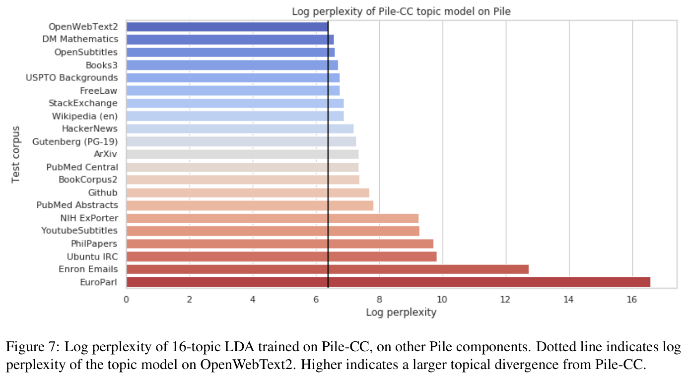
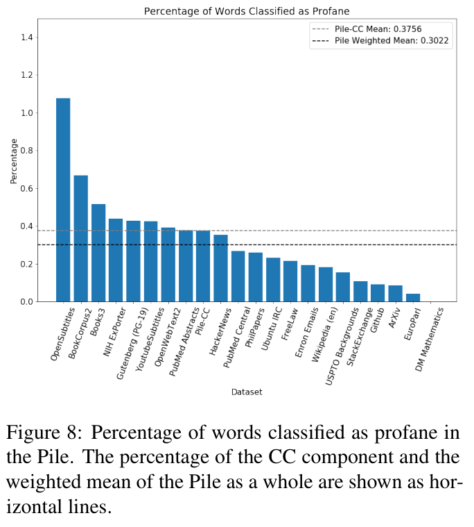
此外，我们计算了每个组成数据集中共现词语的平均情感，如图 14 所示。在整个数据集中，我们发现“Buddhist”（佛教徒）的情感得分最高，其次是“Hindu”（印度教徒）、“Christian”（基督徒）、“Atheist”（无神论者）和“Muslim”（穆斯林）。值得注意的是，“Jew”（犹太人）最低，这可能反映了它在历史上被用作贬称。
最后，我们对种族群体进行了相同分析。这里，由于“black”或“white”等标识词往往不指种族，我们改为计算与“black man”（黑人男性）或“white woman”（白人女性）等短语的共现。
表 12 展示了对各人口群体偏向最强的 15 个词。我们再次发现，共现情况反映了这些术语的使用情境。例如，对“black”偏向最强的 4 个词是“unarmed”（未携带武器的）、“civil”（民事的／公民的）、“criminal”（犯罪的）和“scary”（可怕的）。
与前面的分析类似，我们计算共现词语的平均情感。表 13 报告了平均情感数值。我们发现，“hispanic/latino”（西班牙裔／拉丁裔）略高于“asian”（亚裔），情感得分最高，其次是“white”。另一方面，“black”的情感得分最低，为 -0.15。
我们指出，所有人口群体的平均情感都是负值。我们推测，这是因为用于计算共现的短语出现于特定情境。例如，新闻报道往往会将嫌疑人描述为“asian man”（亚裔男性）。
在自然语言处理研究中使用文本的另一个问题是同意。虽然通常并无法律义务要求在作者作品上训练 NLP 算法之前获得作者许可，15但许多人认为这样做是一种道德义务，或是防止滥用的良好措施（Obar, 2020; Prabhu and Birhane, 2020）。（本句跨原文第 13—14 页，已在此合并。）
15法律因国家而异。关于美国法律的讨论，见第 7.1 节。
另一方面，对于在研究情境中重新利用受服务条款保护的数据是否合乎伦理，存在很大分歧（Vitak et al., 2016; Fiesler et al., 2020）；尤其考虑到数字平台固有的权力不对称：它们经常阻止独立研究者调查公开数据，同时又迫使用户同意平台私下使用这些数据（Halavais, 2019）。
虽然 The Pile 的许多数据来自已经明确同意更广泛传播及研究使用的来源，但研究者往往未能清楚记录数据从何而来、其使用是在什么条款下获得同意的。有鉴于此，我们认为发布 The Pile 时，应透明说明数据作者如何表明其数据可以被使用。
为了在同意问题的讨论中体现必要的细致区别，我们将可供公众使用的程度分为三个层级。公开数据是指在互联网上可以免费、方便获得的数据。这主要排除了位于付费墙之后的数据，不论付费墙多么容易绕过，也排除了不易获得但仍可通过 torrent 或暗网等途径取得的数据。符合服务条款（ToS）的数据，是指以已知符合数据托管方服务条款的方式获取和使用的数据。获得作者同意的数据，是指作品原作者同意使用其数据，或合理的人无法认为其数据不会被用于研究等目的的数据。符合 ToS 的数据与获得作者同意的数据主要有两方面差异：需要牢记，人们通常不会阅读服务条款；此外，符合 ToS 并不意味着获得作者同意。我们采用严格的同意模型，将模糊或未知的同意视为未获得同意。
表 5 总结了我们对 The Pile 各数据集状态的理解。标有 ✓ 的数据集在相应方面符合要求，不过有几个数据集值得特别说明。Books3 和 OpenSubtitles 的使用方式符合数据托管方的服务条款。然而，这有一定误导性，因为数据托管方并未获得数据所有者授权将数据放到网上。Enron Emails 数据集收集时未获得作者许可，而是由美国政府作为刑事调查的一部分收集的。虽然 Enron 数据集中邮件所属的人知道这一事实，但他们没有以任何方式对将其纳入表示同意的机会。
The Pile 包含五个数据集，其收集与分发方式不符合 ToS，而且作者无法对其数据被使用表示同意。这些数据集都在 NLP 文献及更广泛的世界中得到广泛使用。除 YouTube Subtitles 数据集外，这些数据集均由研究者发布，并在互联网上自由传播。YouTube Subtitles 数据集由我们为本项目创建，使用一个十分流行的非官方 API；该 API 被广泛使用，而且可以在 Pip、Conda、GitHub 等地方方便获取。考虑到已进行的处理，以及在 The Pile 中识别具体文件的难度，我们认为，使用这些数据集，相对于其广泛发布已造成的影响，不会显著增加伤害。
The Pile 是将模型和数据集不断扩大、增强能力这一道路上的又一块踏脚石。对于逐渐变强的 AI 系统将如何影响更广泛的世界，存在许多严重顾虑（Brundage et al., 2018; Amodei et al., 2016; Bostrom and Yudkowsky, 2014; Bostrom, 2014; Critch and Krueger, 2020），我们认为这些问题值得认真思考。本节讨论 The Pile 的法律影响，再从两个角度考虑其对 AI 对齐的影响：加速 AI 发展时间线，以及未对齐语言模型带来的危险。
虽然机器学习界已开始讨论在受版权保护的数据上训练模型是否合法，但鲜有人承认：处理和分发他人拥有的数据也可能违反版权法。作为朝这一方向迈出的一步，我们讨论为何认为自己对受版权保护数据的使用符合美国版权法。16（末句跨原文第 14—15 页，已在此合并。）
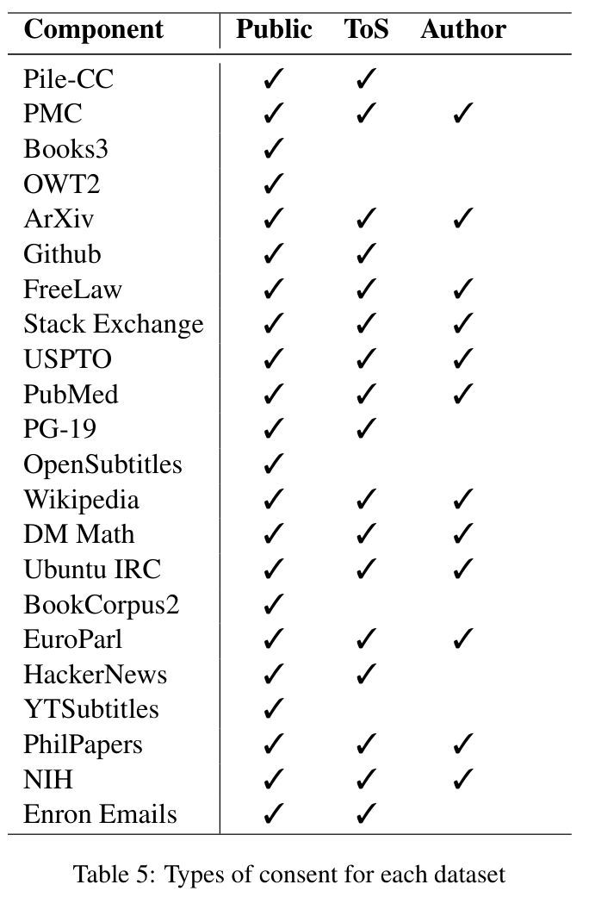
根据 pre（1984），以及 aff（2013）、Google（2015）等后续裁决的确认，对受版权保护媒体的非商业、非营利用途原则上属于合理使用。此外，我们的使用具有转换性：原始形式的数据不能有效服务于我们的目的，而我们形式的数据也不能有效服务于原文档的目的。虽然我们使用受版权保护作品的全文，但当完整作品是必要的时，这并不必然构成不符合条件的理由（ful, 2003）。在我们的情形中，自然语言的长程依赖要求使用全文，以产生最佳结果（Dai et al., 2019; Rae et al., 2019; Henighan et al., 2020; Liu et al., 2018）。
版权法因国家而异，在特定司法辖区内，部分作品还可能受到额外限制。为便于遵守当地法律，我们提供了 The Pile 的复现代码，可用于排除不适合用户的某些组成部分。遗憾的是，我们没有确定哪些具体文本受版权保护所必需的元数据，因此只能在组成部分层面进行排除。所以，这应被视为启发式判断，而不是精确判定。
人们严重担忧，AI 系统可能很快就在所有相关经济任务上显著超越人类（Grace et al., 2018; Yudkowsky, 2013）。与此相关，如何将如此强大的 AI 系统正确地与人类利益对齐（Bostrom and Yudkowsky, 2014; Russell, 2019; Bostrom, 2014; Amodei et al., 2016），以及如何在总体上避免道德层面的灾难性结果（Sotala and Gloor, 2017; Shulman and Bostrom, 2020），仍存在严重的未解决问题。因此，有观点认为，在这些顾虑得到更充分处理之前，加速发展如此强大的 AI 系统可能并不可取（Bostrom, 2014）。
对于这一观点，存在几种务实回应：
考虑到这些情况，我们接受 The Pile 可能加速 AI 发展时间线这一现实。不过，我们希望，建立最佳实践的努力，例如详尽记录数据内容，能够鼓励下游研究者认真处理对齐问题。
16这段讨论并不构成、也无意构成法律建议，而是对法律的一般性讨论。只有你的律师才能保证本文信息适用于某个具体情况。若有疑问，始终建议咨询知识产权律师。
对于强大语言模型可能给世界带来的负面影响，已有大量讨论（Brown et al., 2020; Brundage et al., 2018）。其中一些潜在问题，例如为了搜索引擎优化而大量生产低质量内容的能力，是网络内容分发方式固有的问题，无法仅由语言模型开发者阻止。直接解决这些问题，需要对互联网架构进行全面改变，例如大幅扩展公钥基础设施，以及采用分布式身份认证（Ferguson and Schneier, 2003）。
另一个顾虑是，在海量数据集上训练此类模型，几乎不可避免地会使训练集包含不良内容，例如宣扬仇恨刻板印象的内容（Christian, 2020）。模型输出不良内容，按定义就是不理想的；但我们认为，从训练集一侧解决这一问题并无成效，最终会让我们远离最优解决方案。一个人读到种族主义内容之后，并不会立即采纳其中的种族主义观点——他可能有能力这样做，但可以决定不这样做。这种理解不良内容并决定忽略它的能力，是未来必不可少的研究方向。这不仅能让模型更放心地使用“更脏”的数据，也能利用获得的知识，更好地理解哪些事不应做。我们认识到，尽管人类引导学习近期有所进展（Stiennon et al., 2020），技术尚未达到这一阶段，因此我们作出了本文所述的一些编辑取舍。不过，这一方法似乎对这些模型乃至更广泛的 AI 的未来都至关重要，还需要更多研究。
在大型未标注文本语料库上对自然语言处理模型进行自监督训练，已在该领域得到广泛采用。GloVe（Pennington et al., 2014）和 word2vec（Mikolov et al., 2013）等词表示模型，在 Wikipedia、Gigaword（Graff et al., 2003）或未公开的 Google News 语料库等数据集上训练。最近，语言模型（Radford et al., 2018, 2019; Brown et al., 2020; Rosset, 2019; Shoeybi et al., 2019）和掩码语言模型（Devlin et al., 2019; Liu et al., 2019; Raffel et al., 2019）已经在 Wikipedia、BookCorpus（Zhu et al., 2015）、RealNews（Zellers et al., 2019）、CC-Stories（Trinh and Le, 2018）以及下面讨论的其他互联网抓取派生数据集上训练。WikiText（Stephen et al., 2016）等其他数据集，也用于类似的自监督训练。
随着语言建模的数据需求增加，研究界转向互联网抓取来获取大型数据集（Gokaslan and Cohen, 2019），其中 Common Crawl 尤为普遍。Brown et al.（2020）、Wenzek et al.（2019）、Suárez et al.（2019b）和 Raffel et al.（2019）等工作依赖 Common Crawl 构建大型模型的训练数据集。不过，这些工作通常强调清洗和过滤 Common Crawl 数据的困难，并往往将最终数据质量视为决定模型能力的因素。
训练语言模型时组合多个数据集，也越来越成为常见做法。例如，GPT（Radford et al., 2018）在 Wikipedia 和 BookCorpus 上训练，而 GPT-3（Brown et al., 2020）则在 Wikipedia、两个小说数据集和两个网页抓取数据集上训练。The Pile 延续了这一趋势，将大规模网页抓取数据与规模较小、质量更高的数据集结合，后者承载了我们认为最有益于语言模型训练的知识。
与 The Pile 最可比的两个公开数据集是 CC-100（Wenzek et al., 2019）和 C4/mC4（Raffel et al., 2019）。C4 与 The Pile 规模相当，而 mC4 和 CC-100 是更大的多语言数据集。不过，C4/mC4 需要巨大的计算资源来预处理数据，其维护者甚至建议使用分布式云服务，17这为使用这些数据集设置了很高的门槛。CC-100 可以直接下载，而且已经清洗；不过，其英文部分比 The Pile 小得多。需要强调的是，这三个数据集全部完全源于 Common Crawl——如前所述，目前训练大规模语言模型的最佳实践，是同时使用大规模网页抓取数据和更有针对性的高质量数据集，这正是 The Pile 直接解决的问题。（末句跨原文第 16—17 页，已在此合并。）
作者感谢 TensorFlow Research Cloud 为评估提供计算资源，也感谢 OpenAI 为 GPT-3 评估提供 OpenAI API 访问权限与额度。
我们还感谢 Farrukh Raman、JR Smith 和 Michelle Schmitz 审阅手稿。
1984. Sony corp. of america v. universal city studios, inc.
2003. Kelly v. arriba soft corp.
2013. Righthaven llc v. hoehn.
Dario Amodei, Chris Olah, Jacob Steinhardt, Paul Christiano, John Schulman, and Dan Mané. 2016. AI 安全中的具体问题。 arXiv 预印本 arXiv:1606.06565.
Stefano Baccianella, Andrea Esuli, and Fabrizio Sebastiani. 2010. SentiWordNet 3.0：用于情感分析与观点挖掘的增强词汇资源。 In LREC. European Language Resources Association. · 原文链接
Emily M Bender and Batya Friedman. 2018. 自然语言处理的数据声明：迈向缓解系统偏见与促进更好的科学研究。 Transactions of the Association for Computational Linguistics, 6:587–604.
Stella Biderman. 2021. The Pile 的数据声明。 arXiv 预印本 arXiv.
Stella Biderman, Kieran Bicheno, and Leo Gao. 2021. The Pile 的数据说明表。 arXiv 预印本 arXiv.
Stella Biderman and Walter J. Scheirer. 2020. 机器学习研究中的陷阱：重新审视开发周期。 NeurIPS “I Can’t Believe It’s Not Better!” Workshop.
David M Blei, Andrew Y Ng, and Michael I Jordan. 2003. 潜在狄利克雷分配。 Journal of machine Learning research, 3(Jan):993–1022.
Su Lin Blodgett, Solon Barocas, Hal Daumé III, and Hanna Wallach. 2020. 语言（技术）即权力：对 NLP 中“偏见”的批判性综述。 arXiv 预印本 arXiv:2005.14050.
Nick Bostrom. 2014. 超级智能：路径、危险与策略。 Oxford University Press, Inc.
Nick Bostrom and Eliezer Yudkowsky. 2014. 人工智能伦理。 The Cambridge handbook of artificial intelligence, 1:316–334.
Tom B Brown, Benjamin Mann, Nick Ryder, Melanie Subbiah, Jared Kaplan, Prafulla Dhariwal, Arvind Neelakantan, Pranav Shyam, Girish Sastry, Amanda Askell, et al. 2020. 语言模型是少样本学习者。 arXiv 预印本 arXiv:2005.14165.
Miles Brundage, Shahar Avin, Jack Clark, Helen Toner, Peter Eckersley, Ben Garfinkel, Allan Dafoe, Paul Scharre, Thomas Zeitzoff, Bobby Filar, et al. 2018. 人工智能的恶意使用：预测、预防与缓解。 arXiv 预印本 arXiv:1802.07228.
Nicholas Carlini, Florian Tramer, Eric Wallace, Matthew Jagielski, Ariel Herbert-Voss, Katherine Lee, Adam Roberts, Tom Brown, Dawn Song, Ulfar Erlingsson, Alina Oprea, and Colin Raffel. 2020. 从大型语言模型中提取训练数据。 · 原文链接
Isaac Caswell, Theresa Breiner, Daan van Esch, and Ankur Bapna. 2020. 真实环境中的语言识别：构建千种语言网页文本语料库道路上的意外挑战。 arXiv 预印本 arXiv:2010.14571.
Brian Christian. 2020. 对齐问题：机器学习与人类价值观。 WW Norton & Company.
Alina Maria Ciobanu, Liviu P Dinu, and Andrea Sgarro. 2017. 迈向语言句法相似性图谱。 In International Conference on Computational Linguistics and Intelligent Text Processing, 页码 576– 590. Springer.
Alexis Conneau, Kartikay Khandelwal, Naman Goyal, Vishrav Chaudhary, Guillaume Wenzek, Francisco Guzmán, Edouard Grave, Myle Ott, Luke Zettlemoyer, and Veselin Stoyanov. 2020. 大规模无监督跨语言表示学习。 In Proceedings of the 58th Annual Meeting of the Association for Computational Linguistics, 页码 8440–8451, Online. Association for Computational Linguistics. · 原文链接
Marta R Costa-jussà, Roger Creus, Oriol Domingo, Albert Domínguez, Miquel Escobar, Cayetana López, Marina Garcia, and Margarita Geleta. 2020. 面向机器翻译调整的数据集说明表：模板与资料库。 arXiv 预印本 arXiv:2005.13156.
Andrew Critch and David Krueger. 2020. 面向人类生存安全的 AI 研究考量（ARCHES）。 预印本见 acritch.com/arches. · 原文链接
Zihang Dai, Zhilin Yang, Yiming Yang, Jaime Carbonell, Quoc V Le, and Ruslan Salakhutdinov. 2019. Transformer-XL：超越固定长度上下文的 attention 语言模型。 arXiv 预印本 arXiv:1901.02860.
Jacob Devlin, Ming-Wei Chang, Kenton Lee, and Kristina Toutanova. 2019. BERT：面向语言理解的深度双向 transformer 预训练。 In Proceedings of the 2019 Conference of the North American Chapter of the Association for Computational Linguistics: Human Language Technologies, Volume 1 (Long and Short Papers). Association for Computational Linguistics.
István Endrédy and Attila Novák. 2013. 更有效的网页样板文本移除——GoldMiner 算法。 In Polibits.
Niels Ferguson and Bruce Schneier. 2003. 实用密码学。 John Wiley & Sons.
Casey Fiesler, Nathan Beard, and Brian C Keegan. 2020. 禁止机器人、蜘蛛程序或抓取程序：社交媒体服务条款对数据收集方法的法律与伦理规制。 In Proceedings of the International AAAI Conference on Web and Social Media, 卷 14, 页码 187–196.
Timnit Gebru, Jamie Morgenstern, Briana Vecchione, Jennifer Wortman Vaughan, Hanna Wallach, Hal Daumé III, and Kate Crawford. 2018. 数据集说明表。 arXiv 预印本 arXiv:1803.09010.
Aaron Gokaslan and Vanya Cohen. 2019. OpenWebText 语料库。 http://Skylion007.github.io/OpenWebTextCorpus.
Authors Guild v. Google. 2015. . 案卷编号 13-4829cv, 804:202.
Katja Grace, John Salvatier, Allan Dafoe, Baobao Zhang, and Owain Evans. 2018. AI 何时会超越人类表现？来自 AI 专家的证据。 Journal of Artificial Intelligence Research, 62:729–754.
David Graff, Junbo Kong, Ke Chen, and Kazuaki Maeda. 2003. 英文 Gigaword。 Linguistic Data Consortium, Philadelphia, 4(1):34.
Declan Groves and Andy Way. 2006. 机器翻译中的混合方法：Europarl 语料库上的实验。 In Proceeedings of the 11th Annual conference of the European Association for Machine Translation (EAMT 2006).
Alexander Halavais. 2019. 克服服务条款的限制：合乎伦理的分布式研究提案。 Information, Communication & Society, 22(11):1567–1581.
Chris Hardin. 2018. 如何打乱大型数据集。 · 原文链接
Tom Henighan, Jared Kaplan, Mor Katz, Mark Chen, Christopher Hesse, Jacob Jackson, Heewoo Jun, Tom B Brown, Prafulla Dhariwal, Scott Gray, et al. 2020. 自回归生成建模的 scaling laws。 arXiv 预印本 arXiv:2010.14701.
Matthew Hoffman, Francis Bach, and David Blei. 2010. 潜在狄利克雷分配的在线学习。 advances in neural information processing systems, 23:856–864.
Dirk Hovy and Shannon L Spruit. 2016. 自然语言处理的社会影响。 In Proceedings of the 54th Annual Meeting of the Association for Computational Linguistics (Volume 2: Short Papers), 页码 591–598.
Ben Hutchinson, Vinodkumar Prabhakaran, Emily Denton, Kellie Webster, Yu Zhong, and Stephen Denuyl. 2020. NLP 模型中的社会偏见如何成为残障人士的障碍。 arXiv 预印本 arXiv:2005.00813.
Eun Seo Jo and Timnit Gebru. 2020. 档案带来的启示：机器学习中收集社会文化数据的策略。 In Proceedings of the 2020 Conference on Fairness, Accountability, and Transparency, 页码 306–316.
Jared Kaplan, Sam McCandlish, Tom Henighan, Tom B Brown, Benjamin Chess, Rewon Child, Scott Gray, Alec Radford, Jeffrey Wu, and Dario Amodei. 2020. 神经语言模型的 scaling laws。 arXiv 预印本 arXiv:2001.08361.
Bryan Klimt and Yiming Yang. 2004. Enron 语料库：用于电子邮件分类研究的新数据集。 In European Conference on Machine Learning, 页码 217–226. Springer.
Sosuke Kobayashi. 2018. 自行构建的 BookCorpus。 https://github.com/BIGBALLON/cifar-10-cnn.
Philipp Koehn. 2005. Europarl：用于统计机器翻译的平行语料库。 In MT summit, 卷 5, 页码 79–86. Citeseer.
Dmitry Lepikhin, HyoukJoong Lee, Yuanzhong Xu, Dehao Chen, Orhan Firat, Yanping Huang, Maxim Krikun, Noam Shazeer, and Zhifeng Chen. 2020. GShard：利用条件计算与自动分片扩展巨型模型。 arXiv 预印本 arXiv:2006.16668.
Peter J Liu, Mohammad Saleh, Etienne Pot, Ben Goodrich, Ryan Sepassi, Lukasz Kaiser, and Noam Shazeer. 2018. 通过长序列摘要生成 Wikipedia。 arXiv 预印本 arXiv:1801.10198.
Yinhan Liu, Myle Ott, Naman Goyal, Jingfei Du, Mandar Joshi, Danqi Chen, Omer Levy, Mike Lewis, Luke Zettlemoyer, and Veselin Stoyanov. 2019. RoBERTa：一种经过稳健优化的 BERT 预训练方法。 arXiv 预印本 arXiv:1907.11692.
Edward Loper and Steven Bird. 2002. NLTK：自然语言工具包。 In Proceedings of the ACL Workshop on Effective Tools and Methodologies for Teaching Natural Language Processing and Computational Linguistics, 页码 62–69. Somerset, NJ: Association for Computational Linguistics. http://arXiv.org/abs/cs/0205028.
John MacFarlane. 2006–2020. Pandoc：通用文档转换器。 · 原文链接
Tomas Mikolov, Ilya Sutskever, Kai Chen, Greg S Corrado, and Jeff Dean. 2013. 词与短语的分布式表示及其组合性。 In Advances in Neural Information Processing Systems, 卷 26, 页码 3111–3119. Curran Associates, Inc. · 原文链接
Jonathan A Obar. 2020. 仅有阳光并非消毒剂：同意，以及在没有辅助时打开大数据黑箱的徒劳。 Big Data & Society, 7(1):2053951720935615.
Jeffrey Pennington, Richard Socher, and Christopher D. Manning. 2014. GloVe：用于词表示的全局向量。 In Empirical Methods in Natural Language Processing (EMNLP), 页码 1532–1543. · 原文链接 · 原文链接
跨页参考文献已在起始页合并完整。
Vinay Uday Prabhu and Abeba Birhane. 2020. 大型图像数据集：计算机视觉的惨胜？ arXiv 预印本 arXiv:2006.16923.
Shawn Presser. 2020. Books3. https://twitter.com/theshawwn/status/1320282149329784833.
Alec Radford, Karthik Narasimhan, Time Salimans, and Ilya Sutskever. 2018. 通过无监督学习改善语言理解。 技术报告， OpenAI.
Alec Radford, Jeffrey Wu, Rewon Child, David Luan, Dario Amodei, and Ilya Sutskever. 2019. 语言模型是无监督多任务学习者。 OpenAI Blog, 1(8):9.
Jack W Rae, Anna Potapenko, Siddhant M Jayakumar, Chloe Hillier, and Timothy P Lillicrap. 2019. 用于长程序列建模的压缩 transformer。 arXiv 预印本. · 原文链接
Colin Raffel, Noam Shazeer, Adam Roberts, Katherine Lee, Sharan Narang, Michael Matena, Yanqi Zhou, Wei Li, and Peter J Liu. 2019. 利用统一的文本到文本 transformer 探索迁移学习的极限。 arXiv 预印本 arXiv:1910.10683.
Inioluwa Deborah Raji and Jingying Yang. 2019. ABOUT ML：围绕机器学习生命周期的理解与透明性开展标注和基准评估。 arXiv 预印本 arXiv:1912.06166.
C. Radhakrishna Rao. 1961. 利用随机抽样数生成给定数量元素的随机排列。 Sankhy¯a: The Indian Journal of Statistics, Series A (1961-2002), 23(3):305–307. · 原文链接
Radim Rehurek, Petr Sojka, et al. 2011. Gensim——Python 中的统计语义学。 NLP Centre, Faculty of Informatics, Masaryk University.
C Rosset. 2019. Turing-NLG：Microsoft 的 170 亿参数语言模型。 Microsoft Blog.
S. Russell. 2019. 与人类相容：人工智能与控制问题。 Penguin Publishing Group. · 原文链接
David Saxton, Edward Grefenstette, Felix Hill, and Pushmeet Kohli. 2019. 分析神经模型的数学推理能力。 arXiv 预印本 arXiv:1904.01557.
Ismaïla Seck, Khouloud Dahmane, Pierre Duthon, and Gaëlle Loosli. 2018. Cerema AWP 数据集的基线与数据说明表。 arXiv 预印本 arXiv:1806.04016.
Mohammad Shoeybi, Mostofa Patwary, Raul Puri, Patrick LeGresley, Jared Casper, and Bryan Catanzaro. 2019. Megatron-LM：使用 GPU 模型并行训练数十亿参数语言模型。 arXiv 预印本 arXiv:1909.08053.
Carl Shulman and Nick Bostrom. 2020. 与数字心智共享世界。 预印本。
Kaj Sotala and Lukas Gloor. 2017. 超级智能作为天文尺度痛苦风险的原因或解方。 Informatica, 41(4).
Robyn Speer. 2019. ftfy. Zenodo. 版本 5.5。 · 原文链接
Merity Stephen, Xiong Caiming, Bradbury James, and Richard Socher. 2016.
Nisan Stiennon, Long Ouyang, Jeffrey Wu, Daniel Ziegler, Ryan Lowe, Chelsea Voss, Alec Radford, Dario Amodei, and Paul F Christiano. 2020. 利用人类反馈学习生成摘要。 Advances in Neural Information Processing Systems, 33.
Pedro Javier Ortiz Suárez, Benoît Sagot, and Laurent Romary. 2019a. 在中低资源基础设施上处理海量语料库的异步流水线。 In 7th Workshop on the Challenges in the Management of Large Corpora (CMLC-7). Leibniz-Institut für Deutsche Sprache.
Pedro Javier Ortiz Suárez, Benoît Sagot, and Laurent Romary. 2019b. 在中低资源基础设施上处理海量语料库的异步流水线。 In 7th Workshop on the Challenges in the Management of Large Corpora (CMLC-7). Leibniz-Institut für Deutsche Sprache.
Anja Thieme, Danielle Belgrave, and Gavin Doherty. 2020. 心理健康中的机器学习：对 HCI 文献的系统性综述，以支持开发有效且可实施的 ML 系统。 ACM Transactions on Computer-Human Interaction (TOCHI), 27(5):1–53.
J. Tiedemann. 2016. 在大型电影字幕语料库中寻找替代译文。 Proceedings of the 10th International Conference on Language Resources and Evaluation (LREC 2016).
Trieu H. Trinh and Quoc V. Le. 2018. 一种简单的常识推理方法。 CoRR, abs/1806.02847. · 原文链接
Hans Van Halteren. 2008. Europarl 译文中的源语言标记。 In Proceedings of the 22nd International Conference on Computational Linguistics (Coling 2008), 页码 937–944.
Jessica Vitak, Katie Shilton, and Zahra Ashktorab. 2016. 超越 Belmont 原则：在线数据研究社区的伦理挑战、实践与信念。 In Proceedings of the 19th ACM Conference on Computer-Supported Cooperative Work & Social Computing, 页码 941–953.
Guillaume Wenzek, Marie-Anne Lachaux, Alexis Conneau, Vishrav Chaudhary, Francisco Guzmán, Armand Joulin, and Edouard Grave. 2019. CCNet：从网页抓取数据中提取高质量单语言数据集。 arXiv 预印本 arXiv:1911.00359.
Thomas Wolf, Lysandre Debut, Victor Sanh, Julien Chaumond, Clement Delangue, Anthony Moi, Pierric Cistac, Tim Rault, Rémi Louf, Morgan Funtowicz, Joe Davison, Sam Shleifer, Patrick von Platen, Clara Ma, Yacine Jernite, Julien Plu, Canwen Xu, Teven Le Scao, Sylvain Gugger, Mariama Drame, Quentin Lhoest, and Alexander M. Rush. 2020. Transformers：先进的自然语言处理。 In Proceedings of the 2020 Conference on Empirical Methods in Natural Language Processing: System Demonstrations, 页码 38–45, Online. Association for Computational Linguistics. · 原文链接
跨页参考文献已在起始页合并完整。
Ellery Wulczyn, Nithum Thain, and Lucas Dixon. 2016. Wikipedia 去毒。 · 原文链接
Eliezer Yudkowsky. 2013. 智能爆炸微观经济学。 Machine Intelligence Research Institute, 在线访问日期：2015 年 10 月 23 日。
Rowan Zellers, Ari Holtzman, Hannah Rashkin, Yonatan Bisk, Ali Farhadi, Franziska Roesner, and Yejin Choi. 2019. 防御神经网络生成的虚假新闻。 In H. Wallach, H. Larochelle, A. Beygelzimer, F. dÁlché-Buc, E. Fox, and R. Garnett, editors, Advances in Neural Information Processing Systems 32, 页码 9054–9065. Curran Associates, Inc. · 原文链接
Victor Zhou. 2019. 使用 scikit-learn 构建更好的粗俗内容检测库。
Yukun Zhu, Ryan Kiros, Rich Zemel, Ruslan Salakhutdinov, Raquel Urtasun, Antonio Torralba, and Sanja Fidler. 2015. 对齐图书与电影：通过观看电影和阅读图书，迈向叙事式视觉解释。 In Proceedings of the IEEE international conference on computer vision, 页码 19–27.
所有作者都参与了研究项目的设计和论文写作。此外，各作者还作出如下贡献：
Leo Gao 领导项目，实现 The Pile 的主代码库，参与模型训练代码的编写，执行评估与语言分析，解释 PPL 分析结果，实现生成最终数据的处理流程，并处理 Pile-CC、PubMed Central、ArXiv 和 Ubuntu IRC。
Stella Biderman 领导数据分析、广泛影响分析和数据记录工作，并协调项目。她还撰写了结构统计、作者同意和版权法分析。
Sid Black 实现模型训练与评估代码，并处理 YouTube Subtitles、Stack Exchange 和 GitHub。
Laurence Golding 实现去重，执行 n-gram 分析，并处理 OpenWebText2。
Travis Hoppe 处理 FreeLaw、PubMed Abstracts、ExPorter 和 PhilPapers。
Charles Foster 执行主题建模分析，参与作者同意问题的讨论，并处理 USPTO Backgrounds。
Jason Phang 实现并执行 GPT-2/3 PPL 分析，并为项目提供建议。
Horace He 执行偏见与情感分析。
Anish Thite 实现并执行粗俗内容分析，并处理 Hacker News。
Noa Nabeshima 处理 GitHub。
Shawn Presser 处理 BookCorpus2。
Connor Leahy 撰写对齐影响分析及模型训练代码。
构建 The Pile 时，我们考虑纳入、但最终决定不使用若干数据集。一些数据集被排除，是因为规模太小、不值得投入时间，或者其中的英文部分本身不足以使其值得纳入。不过，我们也因其他原因排除了若干数据集；为保证透明性，在此记录这些原因：
本节包含第 2 节所列每个数据集的补充信息，包括如何获取、如何处理，以及与复现相关的其他细节。本节旨在提供尽可能详尽的信息，以便未来必要时复现 The Pile，也使未来对这些数据集或类似数据集的处理能够使用或改进我们的方法。因此，所有为数据处理创建的代码都已采用宽松的开源许可证公开，并在适用时通过脚注引用。（后两句跨原文第 21—22 页，已在此合并。）
我们使用 jusText（Endrédy and Novák, 2013）提取 Common Crawl。过滤实现使用基于 OpenWebText2 数据集训练的分类器。我们仅处理可用 Common Crawl 数据的一小部分：将指向 2013—2020 年各 WARC 文件的 URL 列表分为 3679 块，并处理随机选取的 22 块。
Common Crawl 数据主要以两种格式提供：Web ARChive（WARC）文件包含完整抓取记录以及网页原始 HTML；WET 文件包含预先从 WARC 文件内容中提取的版本。WET 文件质量较差，经常包含菜单、页脚等大量样板文本。不过，由于使用 WET 文件对带宽和计算的要求较低，此前基于 CC 的工作主要聚焦于使用 WET 文件，同时应用文档级过滤（Brown et al., 2020; Wenzek et al., 2019），或采用非常激进的启发式方法进行 n 句级去重（Raffel et al., 2019）等清洗。
我们认为，文档级过滤对 WET 文件并不充分，因为 WET 文件的许多问题来自文档内部的样板文本。我们还发现 Raffel et al.（2019）使用的许多启发式方法过于激进，例如移除所有不以标点结尾的行、移除“javascript”一词，以及三句去重。
除了 jusText，我们还考虑了 Trafilatura、Newspaper、Goose3 和 DragNet。虽然我们最初打算创建提取基准，但以现有资源证明无法实现，因此基于对输出的目视检查选择了 jusText。检查时，我们发现 jusText 的特点是比许多其他提取器丢弃更多数据；鉴于可用 CC 数据量很大，这并非重大缺点。这与预期一致，因为 jusText 本来就面向文本语料库创建。相比之下，例如 trafilatura 更擅长忠实保留网站结构，经常能正确提取表格等元素，但保留了过多不必要的样板文本。如果使用 trafilatura，我们就需要额外的页面内部过滤步骤来移除样板文本。
虽然 jusText 在技术上确实支持若干其他语言，但这些语言上的质量不及英文，因为算法中的许多常量都专门针对英文调优。此外，jusText 完全无法处理中文、日文等不使用空格分隔词的语言。
由于难以在所有语言中维持可接受的提取质量，我们决定将 CC 数据集的范围限制为英文，并将高质量、完整多语言、基于 WARC 的 CC 数据集留待后续研究。为仅保留英文，我们使用 pycld2 库，仅尝试从英文是最常见语言的文档中提取文本。
我们使用 pycld2 而非 fasttext，是因为它能直接从 HTML 中识别语言，而且 jusText 在提取前需要知道网页语言。此外，pycld2 显著快于 jusText；仅对 pycld2 判定为英文的文档使用 jusText 处理，使所需计算减少了约一半。
为语言建模从网站提取文本，尤其是为多语言语料库提取文本，是非常不简单的任务；我们将此类提取的改进留待后续研究。
为按质量过滤 CC，我们遵循 Brown et al.（2020），训练分类器区分已知高质量数据集与 CC。我们使用 fasttext，n-gram 大小为 2。我们分别尝试以整个 The Pile 和仅 OpenWebText2 作为正例；在未见过的 CC 数据上的得分分布如图 9 所示。最终 CC 数据仅使用 OpenWebText2 作为正例，因为使用完整 The Pile 时灵敏度较低。（末句跨原文第 22—23 页，已在此合并。）
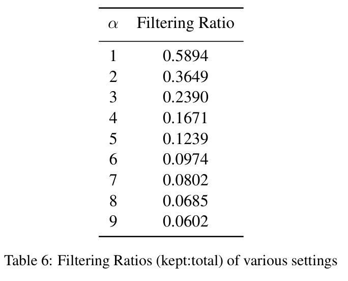
我们使用与 Brown et al.（2020）相同的 Pareto 分布阈值法，取 \(\alpha=3\)。选择 \(\alpha\) 时，我们以将 CC 子集过滤到所需规模的必要过滤比例为目标。\(\alpha\) 对过滤比例的影响如表 6 所示。
我们使用 pandoc 1.19.2.4（MacFarlane, 2006–2020），将 PMC 提供的 JATS 格式数据转换为 Markdown。随后，移除以 ::: 开头的所有行，pandoc 使用这种标记在 Markdown 中表示 HTML 类。
没有其他细节。
为生成数据集，首先从截至 2020 年 4 月的所有 Reddit 帖子中提取 URL 及其相关元数据。对 URL 进行去重，使每个唯一 URL 都带有相关帖子元数据列表和累计得分。移除累计得分小于 3 的 URL。然后使用 Newspaper 抓取器抓取并处理链接。文档级去重通过 DataSketch 库中的内存 MinHashLSH 完成。
我们生成了过滤版与原始版，其中原始版仅按 URL 去重。过滤版包含 17,103,059 篇文档，共 65.86 GB 未压缩文本。原始版大得多，包含 69,547,149 篇文档，共 193.89GB 未压缩文本。
我们为 OpenWebText2 选择 Newspaper 而非 jusText，以与 OpenWebTextCorpus 保持一致。此外，在 The Pile 的不同组成部分中使用多个不同的 HTML 提取器，可以减少某一个提取器的系统性偏差对数据集造成负面影响的潜在作用。
我们通过 arXiv 的 S3 批量源文件访问服务，18下载了截至 2020 年 7 月数据转储中 arXiv 的所有论文的 TeX 源文件；数据中包含的最后一个文件是 arXiv_src_2007_068.tar。我们使用 pandoc 1.19.2.4 将这些源文件转换为 Markdown，并丢弃转换过程中出错的论文。最终得到 1,264,405 篇论文。
我们移除以 ::: 开头的所有行，pandoc 使用这种标记在 Markdown 中表示 HTML 类。
我们将数据收集分为两步：
第一步中，我们借鉴 WebText 数据集的做法，用 GitHub 的 star 数作为质量代理指标，仅收集超过 100 个 star 的仓库。出于实际原因，我们还将收集范围限制为文件总量小于 1GB 的仓库。由于 GitHub API 将搜索结果数量限制为 1000，为了全面收集所有仓库，我们需要创建许多小查询，每个查询返回少于 1000 个结果，并确保每个目标仓库至少被一个查询返回。为此，我们最初按规模限定搜索，只返回大小下界为 0、上界为 5 字节的仓库。撰写本文时，这会返回 965 个结果。下一步，将下界设为前一上界加 1，再利用上一次查询结果估计一个仍应返回少于 1000 个结果的新上界：\(\mathrm{lowerbound}+1000/(n/r)\)，其中 \(n\) 是前一次结果数，\(r\) 是前一步上下界的范围。（末句跨原文第 23—24 页，已在此合并。）
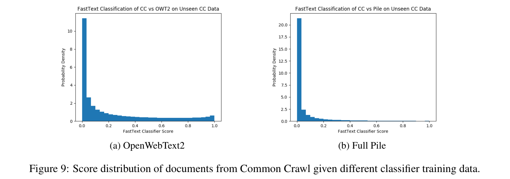
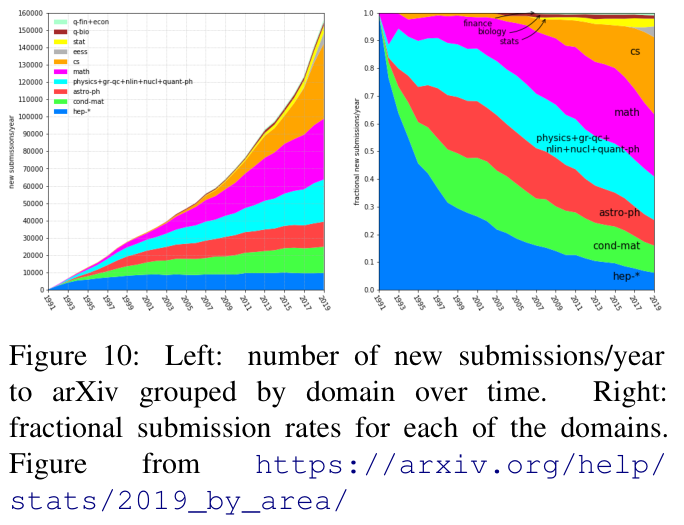
这种方法通常不会超出结果数限制，因为 GitHub 仓库的大小遵循幂律分布；但如果超出，我们就利用新查询返回的仓库数量，重新估计上界。
使用收集到的仓库列表，我们逐个克隆仓库，提取所有基于文本的文件，并丢弃其余内容。由于某些仓库的克隆或提取所需时间长得不切实际，我们为 git 克隆和文本提取两个步骤都设定了 300 秒的硬性时间限制。因此，某些较大仓库可能仅被部分提取。我们还为提取的文件设置 100kB 大小限制，因为我们发现超过这一大小的文件，多数通常是高度重复的自动生成源文件或数据文件；设定这一文件大小限制，是将数据限制为代码的一种有效清洗步骤。
因为我们希望限制整个 The Pile 的规模，所以从总共收集的 630.64 GiB GitHub 数据中，随机抽取了 95.0 GiB，并将质量过滤留待后续研究。
不过，我们认为，随着语言模型不断扩展规模并增强泛化能力，代码生成将成为日益重要的组成部分。因此，我们希望在后续工作中扩展这一数据集。
我们从 CourtListener19批量下载法院意见书数据，并使用 BeautifulSoup 提取原始文本。
为构建数据集，我们下载并将每份 Stack Exchange 数据库转储解析为纯文本文件。我们选择提取得票至少为 3 的前三个回答，丢弃其他所有回答。我们只保留纯文本问题与回答，不纳入任何元数据。受大规模语言模型少样本能力的启发（Brown et al., 2020），我们分别在所有问题与回答前添加 Q:\n\n 和 A:\n\n，以提供上下文。
最终数据集包含总计 365 个 Stack Exchange 和 Meta-Stack Exchange 站点中的 15,622,475 篇文档，其中大部分来自 StackOverflow。
美国专利商标局（USPTO）发布了 1976 年至 2020 年 9 月所有美国授权专利全文的批量档案。我们从这些档案中提取背景章节，以及发明人、受让人和分类信息等关键授权元数据。（本段跨原文第 24—25 页，已在此合并。）
用于存储美国专利批量文本的文件格式随时间发生过变化。2002 年以前，所有数据集均使用称为 APS（Automated Patent System，自动化专利系统）的专用格式。自 2002 年起，数据采用 XML 编码。部分由于这一变化，“Background”章节的位置也发生了移动。我们的转换器考虑了这些结构变化，并从每份专利的背景部分提取原始文本。
数据集中约三分之一的文章缺少标题或摘要，或标题、摘要格式有误，因此被排除。此外，PubMed Central（见第 2.2 节）包含许多近期出版物的全文资源；已经出现在 PMC 中的出版物都从这个集合中排除。处理数据时，我们将标题和摘要拼接起来，并移除所有版权信息。余下的数据集包含 15,518,009 条标题与摘要。
没有其他细节。
为创建文本数据集，我们直接从 Tiedemann（2016）提供的英文数据集中每个 XML 文件提取字幕文本，丢弃所有元数据。
我们使用 TensorFlow Datasets 中的 wikipedia/20200301.en 数据集。20我们将标题置于每篇文章正文前，以两个换行符分隔。
我们纳入 DeepMind Mathematics 的 Easy、Medium 和 Hard 部分中的实例，将每个课程条目，例如 algebra__polynomial_roots，拆成 8 KiB 的块。
我们处理了从 2004 年 7 月 5 日到 2020 年 9 月 1 日的所有日志。
处理数据时，加入、断开连接、昵称变化等所有系统消息都被丢弃，但保留动作消息，即使用 /me 的消息。移除时间戳，并将同一频道在给定一周内的所有日志拼接为一篇文档；如果某天日志非空，则在该天日志前加上日期。
原始 BookCorpus 包含 11,038 本图书。不过，由于原始 BookCorpus 的可获取性存在问题，而且有可能收集到更大的版本，我们决定采用与 Kobayashi（2018）类似的方法，收集自己的 BookCorpus 版本。我们的版本包含 17,868 本图书。
我们创建并使用了 Kobayashi（2018）中 epub 到文本转换器的修改版，它能够：
1\.”转换为“1.”；ftfy.fix_text()（Speer, 2019）处理，将 Unicode 撇号替换为 ASCII 撇号，并将 Unicode 省略号展开为“...”，即三个独立 ASCII 字符。我们从脚注 21 的来源批量下载数据。移除所有基本标签信息，仅保留每篇文档的名称作为标题。例如，<SPEAKER ID=77 LANGUAGE="NL" NAME="Pronk"> 变成 Pronk；然后提取每篇文档的正文，丢弃少于 200 个字符的文档。
20 https://www.tensorflow.org/datasets/catalog/wikipedia#wikipedia20200301en
21 http://www.statmt.org/europarl/
我们首先使用 Hacker News BigQuery 数据集获取日期范围内所有文章 ID 的列表。对于 The Pile，我们使用从第一篇 Hacker News 帖子（1）到编号 24531712 的帖子。这大致对应 2006 年 10 月 9 日至 2020 年 9 月 20 日。出于效率考虑，我们使用 BigQuery 数据集收集文章 ID。不过，BigQuery 数据集缺少某些文章信息，因此我们使用官方 Hacker News API 获取文章与评论文本。
Hacker News 以树状方式展示和存储评论，子评论回复父评论。不过，大多数语言模型要求输入数据为序列形式。将评论树中的每条路径视为一个序列，可能产生负面影响，因为会形成大量近乎重复的评论序列。此外，每篇文章只取评论树的一条路径，又会遗漏大部分评论数据。因此，我们采用混合形式解析评论。对每条顶层评论，即没有父评论的评论，我们从该顶层评论向下遍历评论树，创建评论序列。我们选择拥有最多子评论的子节点作为下一条评论；这是低成本地尝试选择评论树中较长路径的方法，需要注意，它并不会选择可能的最长路径。
我们考虑所有至少有一条评论、且未被版主标记为可能违反行为规范的文章。由于评论以 HTML 存储，我们使用 html2text 包从帖子中提取文本。
每篇文档顶部依次列出标题、URL、副标题和作者。顶层评论用 \n----\n 分隔，子评论链用 \n~~~\n 分隔。我们为每条评论保留作者与提取文本。
我们分三个阶段构建数据集：
总计收集了 173,651 个视频的字幕。
PhilPapers（PP）使用 OAI-MPH，即开放档案倡议元数据收割协议进行索引。因此，收集数据的第一步是获取所有链接的 XML。这通过 pyoaiharvester23完成。
随后下载每份出版物。某些条目不存在，或者已经被作者移除。使用 pdfbox 提取包含文本的论文，忽略文本无法由机器读取的论文。保留非英文出版物，元数据反映 OAI-MPH XML 中报告的语言。使用 PDFextract 的 pdf_filter.py 过滤文本，并丢弃少于 1000 个字符的论文。24
NIH 通过 ExPORTER 服务提供获资助申请的批量数据资料库，覆盖 1985 财年至今。这些数据不仅来自 NIH，也来自其他卫生与公众服务机构（ACF、AHRQ、CDC、HRSA、FDA）以及 VA。此外，NIH 还为 1970—2009 财年的获资助申请提供一种称为 CRISP 的旧数据格式。（末句跨原文第 26—27 页，已在此合并。）
22 https://github.com/jdepoix/youtube-transcript-api
23 https://github.com/vphill/pyoaiharvester/
24 https://github.com/sdtblck/PDFextract
我们合并 ExPORTER 和 CRISP 数据，形成整合的获资助申请数据集。按申请 ID 对条目去重，并排除摘要缺失或过短的条目。小额资助，尤其是行政类资助，往往仅由简短样板文本构成。因此，我们进一步按摘要文本去重。我们考虑所有资助类型，包括新申请（申请类型代码 1）和续期申请（申请类型代码 2），因为其文本差异足以提供新输入。随后，对文本进行最低限度的解析，以移除行政样板文本，例如大多数旧资助包含“description: (provided by applicant)”（说明：由申请者提供）的某种变体。总计加入了 939,668 条资助申请摘要。
我们使用 mailparser 包25提取数据，将每封邮件的正文提取为一篇文档。
本节讨论应用于多个数据集的处理流程。
为合并各组成数据集，我们迭代执行以下操作，直到输出数据集达到所需规模：随机从数据集中抽取文档，抽样权重为各数据集的文档数乘以该数据集所需的 epoch 数。由于涉及的文档数很大，根据大数定律，The Pile 中各数据集的副本数量近似等于其 epoch 数。
由于内存和计算预算有限，打乱数据集是一大难题。我们采用 Hardin（2018）的方法，这种方法源自 Rao（1961），并交错排列输出，以产生 30 个输出数据分片。
我们从 The Pile 中留出约 10GiB 数据，其中 2GiB 用于创建验证和测试划分，剩余部分留作备用。为防止泄漏，我们从训练集中移除任何与留出数据中的元素逐字相同的元素。
与 Brown et al.（2020）类似，我们提高某些组成部分的权重，使我们认为高质量的数据被遍历的 epoch 数大于 1。权重选择主要取决于数据来源和数据集规模；我们尝试最大程度提高学术文本的权重，因为认为它们提供了最高质量的数据，也提高较小数据集的权重，使它们对数据产生更明显的影响。我们严格禁止任何数据超过 3 个 epoch，并避免任何数据超过 2 个 epoch。
受内存限制，我们没有对整个 The Pile 进行去重。相反，我们在 OpenWebText2 和 Pile-CC 内部执行文档级去重，因为这些数据集最有可能包含重复文档。
OpenWebText2 与 Common Crawl 使用相同技术：Python Datasketch 库26中的 MinHashLSH。每个 MinHash 使用 10 个哈希函数，近似 Jaccard 相似度设为 0.5。这得到 OpenWebText2 中 28%、Common Crawl 中 26% 的重复率。
这里的主要挑战是计算，促使我们尝试了各种 LSH 持久化选项。简单地对所有文档进行二次复杂度的 MinHash 比较，将需要数十万年，因此需要使用 LSH。最初，我们没有足够 RAM 使用内存 LSH，因此在 OpenWebText2 去重时选择 Cassandra 后端。这相当快，但使用同一方法处理 Common Crawl 时，在进程约完成四分之三时出现数据库损坏。Cassandra 损坏后，我们短暂测试了实验性的 Mongo 实现；不过，由于 Mongo 本身的特性，这非常慢。最终，我们在一台具有足够 RAM 的机器上对 Common Crawl 运行内存 LSH，耗时数天。
25 https://github.com/SpamScope/mail-parser
26 https://github.com/ekzhu/datasketch
为避免下游评估的数据泄漏，近期工作（Radford et al., 2019; Brown et al., 2020; Shoeybi et al., 2019）已移除训练集中任何可能与评估指标数据重叠的数据。我们决定不执行任何此类移除，因为不可能预见所有潜在下游评估指标；因此，任何特定指标选择，都不可避免地会随着该领域基准选择的变化而过时，或可能阻碍为 The Pile 训练模型开发新基准。
对于在 The Pile 上训练、并在 The Pile 自身验证集和测试集之外的指标上评估的模型，我们鼓励作者移除 The Pile 与这些额外下游评估的验证数据之间的重叠。我们预计，此类泄漏移除不会损害模型表现，因为大多数基准的验证集相对于 The Pile 规模非常小，因此选择在更多指标上评估不会使任何模型处于不利地位。
作为探索性分析的一部分，我们计算了整个 Common Crawl 中所有 13-gram 的出现次数。由于此前工作使用过这一取值（Brown et al., 2020），我们选择 \(n=13\)。该数据集中总共有 40,216,231,078 种不同的 13-gram。最常见的 1000 种，其出现次数从 1,100 万次到 2 万次不等。
最频繁出现的 13-gram，是用于样式的字符重复，例如“-- --”“* * * *”“! ! ! !”，分别出现 1,100 万次、580 万次和 110 万次。以这种方式使用的其他字符包括“# . > ?”。在 26.4 万次这一数量级，我们看到格式有误的 HTML 转义字符重复，例如“;  ”“; amp”。标准论坛软件的样板文本出现约 18 万次，例如“select the forum that you want to visit from the selection below”（从下面的选项中选择你希望访问的论坛）。
总体而言，前 1000 种中包含大量常见 HTML 和 CSS，以及 Amazon Affiliate Advertising、TripAdvisor、SimplyHired、Associated Press、PostMedia、FCC 等来源的样板文本。PHP 错误消息和密码登录提示也有出现。Portal 的爱好者可能会感兴趣：“the cake is a lie .”（蛋糕是个谎言。）的重复出现次数很高。
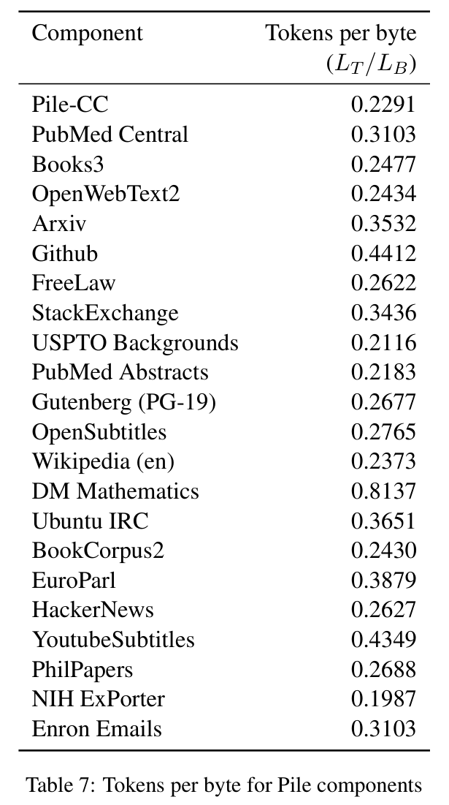
为计算给定数据集的 PPL，我们分别对每篇文档进行 tokenization，将文档拆为不超过模型最大序列长度的片段（GPT-2 为 1024 个 token，GPT-3 为 2048 个），并预测每个片段的 logits。模型输入是紧邻之前的 token，例如，为给第 1 至 1024 个 token 评分，输入上下文提供第 0 至 1023 个 token。相应语言模型实现会处理因果 attention 掩码。这确保数据集中的每个 token 都恰好被评分一次。这也意味着有些 token 比其他 token 拥有更多输入上下文。随后，我们在整个数据集上聚合，并计算最终 PPL 得分。（末句跨原文第 28—29 页，已在此合并。）
整个 The Pile 的 PPL 通过对各组成数据集进行聚合计算，即按数据集规模加权，而不是简单平均各数据集的 PPL。GPT-2 和 GPT-3 使用相同的 tokenizer 和词表，因此 PPL 得分可以直接比较。我们使用 Hugging Face（Wolf et al., 2020）的 GPT-2 实现，以及 OpenAI API 中的 GPT-3。OpenAI API 的 davinci 模型被假定对应 175B 参数版本的 GPT-3。
表 8 展示了测试集 PPL，即没有像表 2 那样按 UTF-8 长度归一化的值。由于使用 OpenAI API 存在成本，在表 8 和表 2 中，我们仅对测试集的十分之一计算 PPL。具体而言，除 Ubuntu IRC、BookCorpus2 和 PhilPapers 三个数据集外，我们从每个数据集中随机抽取十分之一的文档。表 9 展示了所有 GPT-2 模型在完整测试集上计算的测试 PPL。
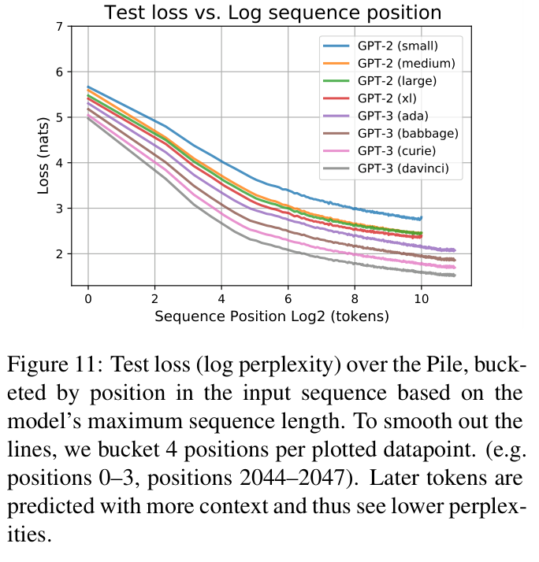
最初，我们决定将贬损性内容分为四组：性相关术语、侮辱性称呼、不属于这两类，以及同时属于这两类。我们调整了一份公开的“不雅词语”列表，并将它们分到这些类别，意在观察每个数据集中各类别的比例。不过，这带来了许多问题。
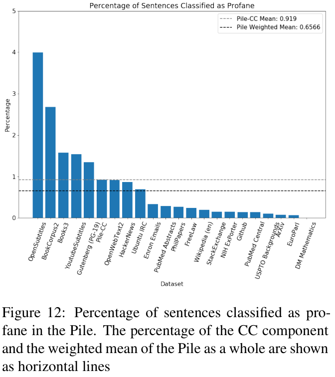
首先，任何词语黑名单都很难捕捉全部贬损性内容，因为故意拼错词语可以绕过审查，同时仍达到预期效果。此外，词语及其意图不断演变，因此任何建立的列表很可能始终过时。另一个问题是将词语分到各类别。词语高度依赖上下文，因此同一个词在不同上下文中会改变类别。
以下内容由从 The Pile 各组成数据集的验证划分中随机抽取的两个 512 字节样本构成，未经挑选。
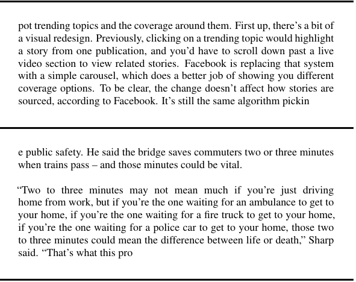
样本 1：……热门话题及其相关报道。首先，视觉设计有了一点变化。此前，点击热门话题会突出显示某一家出版机构的一篇报道，你必须向下滚过直播视频区域才能看到相关报道。Facebook 正在用一个简单的轮播组件替代这一系统，这能更好地展示不同的报道选项。需要明确的是，Facebook 表示，这项变化并不影响报道的来源方式。仍然是同一个算法在挑选……
样本 2：……公众安全。他说，列车经过时，这座桥能为通勤者省下两三分钟，而这些时间可能至关重要。“如果你只是下班开车回家，两三分钟也许算不了什么；但如果你正等救护车、消防车或警车赶到家中，这两三分钟可能意味着生与死的区别，”Sharp 说。“这就是这个项……”
样本见原文第 30 页。
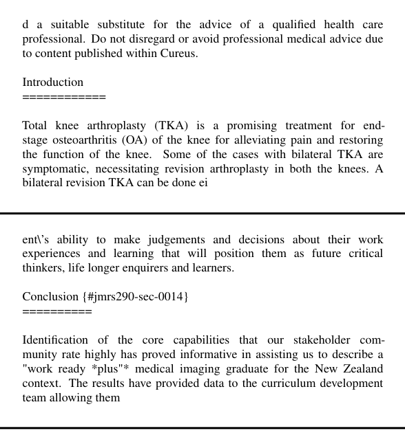
样本 1：……不能适当地替代合格医疗专业人员的建议。不要因为 Cureus 发布的内容而忽视或回避专业医疗建议。
引言
全膝关节置换术（TKA）是一种很有前景的治疗方法，可用于缓解终末期膝骨关节炎（OA）的疼痛并恢复膝关节功能。某些双侧 TKA 病例出现症状，需要对双膝实施翻修关节置换。双侧翻修 TKA 可以……
样本 2：……学生对工作经历与学习作出判断和决定的能力，将使他们成为未来的批判性思考者、终身探索者与学习者。
结论 {#jmrs290-sec-0014}
识别利益相关者群体高度重视的核心能力，为描述适合新西兰情境的“工作准备充分且更进一步”的医学影像毕业生提供了有益信息。这些结果向课程开发团队提供了数据，使他们能够……
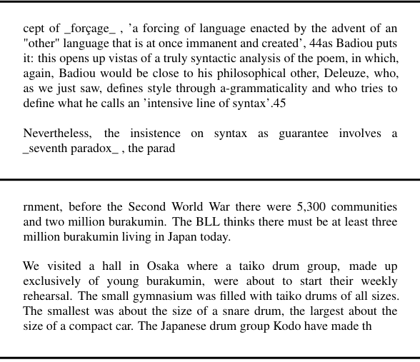
样本 1：……forçage 的概念，如 Badiou 所说，“一种因‘另一种’语言的到来而实施的语言强制，这种语言同时既内在又被创造”，44这打开了对诗进行真正句法分析的视野。在这一点上，Badiou 又接近了他的哲学上的他者 Deleuze；正如刚才所见，Deleuze 通过非语法性定义风格，并试图定义他所谓的“句法的强度线”。45
然而，坚持将句法作为保证，涉及第七个悖论，这一悖……
样本 2：……政府，第二次世界大战之前有 5,300 个社区和 200 万名 burakumin。BLL 认为，如今生活在日本的 burakumin 至少有 300 万人。
我们参观了大阪的一间大厅，一个完全由年轻 burakumin 组成的太鼓团体正准备开始每周排练。小体育馆里摆满了各种尺寸的太鼓。最小的约有小军鼓那么大，最大的约有小汽车那么大。日本鼓乐团 Kodo 已经使……
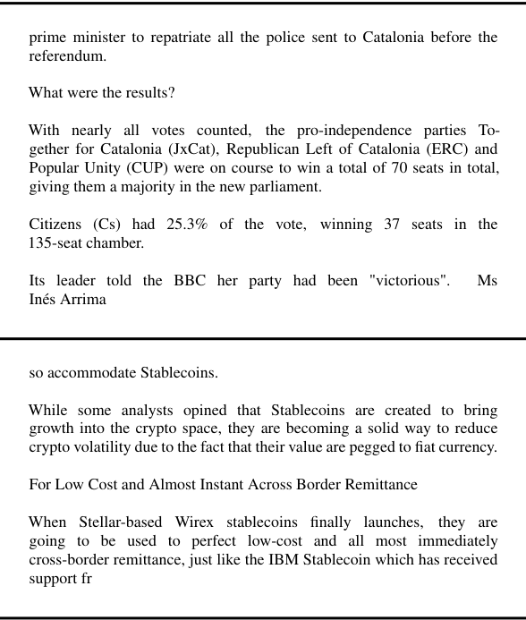
样本 1：……要求首相将在公投前派往加泰罗尼亚的所有警察撤回。
结果如何？
在几乎所有选票完成统计时，支持独立的 Together for Catalonia（JxCat）、Republican Left of Catalonia（ERC）和 Popular Unity（CUP）预计共获得 70 个席位，从而在新议会中取得多数。Citizens（Cs）获得 25.3% 的选票，在拥有 135 个席位的议会中赢得 37 席。该党领导人向 BBC 表示，她的政党“获胜了”。Inés Arrima 女士……
样本 2：……也容纳稳定币。
一些分析者认为，稳定币是为推动加密货币领域增长而创建的；但由于其价值与法定货币挂钩，它们正在成为减少加密货币波动的可靠方式。
用于低成本、几乎即时的跨境汇款
当基于 Stellar 的 Wirex 稳定币最终推出时，它们将用于完善低成本、几乎即时的跨境汇款，就像已获得支持的 IBM Stablecoin……
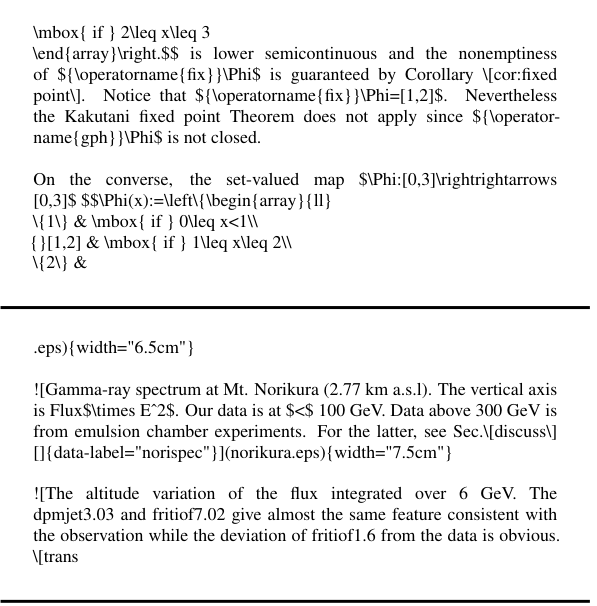
样本 1：……\mbox{ if } 2\leq x\leq 3 \end{array}\right.$$ 是下半连续的，而 \(\operatorname{fix}\Phi\) 的非空性由推论 \[cor:fixed point\] 保证。注意，\(\operatorname{fix}\Phi=[1,2]\)。不过，由于 \(\operatorname{gph}\Phi\) 不闭，Kakutani 不动点定理不适用。反过来，集值映射 \(\Phi:[0,3]\rightrightarrows[0,3]\)……（样本中的 LaTeX 源码和未完整截取的公式见原始裁切。）
样本 2：.eps){width="6.5cm"}
Mt. Norikura 的伽马射线能谱（海拔 2.77 km）。纵轴是 \(\mathrm{Flux}\times E^2\)。我们的数据位于 100 GeV 以下。300 GeV 以上的数据来自乳胶室实验。后者见第 \[discuss\] 节。[]{data-label="norispec"}](norikura.eps){width="7.5cm"}
6 GeV 以上积分通量随海拔的变化。dpmjet3.03 和 fritiof7.02 给出的特征几乎相同，且与观测一致；而 fritiof1.6 对数据的偏离则很明显。\[trans……
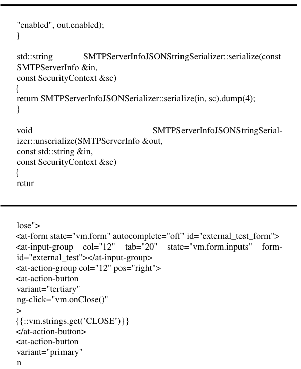
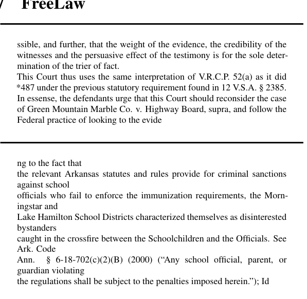
样本 1：……而且，证据的权重、证人的可信度以及证言的说服力，应完全由事实审判者决定。因此，本法院对 V.R.C.P. 52(a) 的解释，与此前依据 12 V.S.A. § 2385 法定要求时的解释相同，见 *487 页。本质上，被告主张，本法院应重新考虑前述 Green Mountain Marble Co. v. Highway Board 案，并遵循联邦层面审查证据的做法……
样本 2：……由于相关 Arkansas 法律和规则规定，对未执行免疫接种要求的学校官员施以刑事制裁，Morningstar 和 Lake Hamilton 学区将自身描述为无利害关系的旁观者，夹在学童与官员之间的交火中。参见 Ark. Code Ann. § 6-18-702(c)(2)(B)（2000）：“任何违反规定的学校官员、家长或监护人，都应受到本文规定的处罚。”；同上……
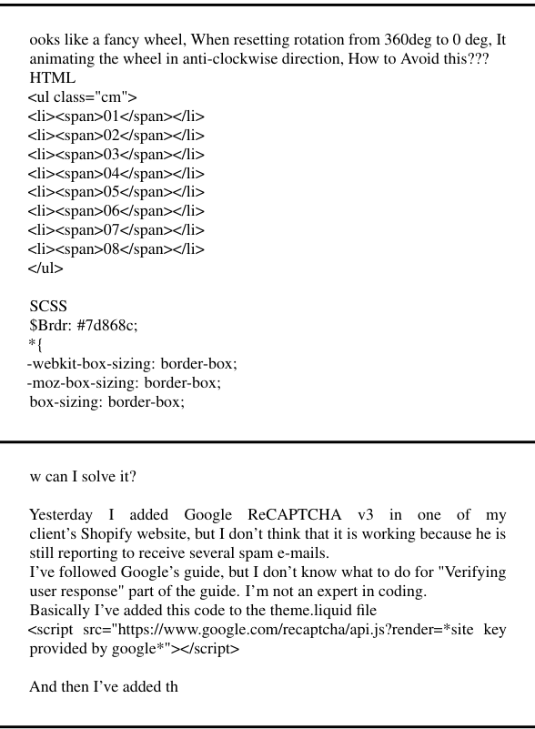
样本 1：……看起来像个漂亮的轮盘。当旋转从 360deg 重置为 0deg 时，它会让轮盘沿逆时针方向播放动画，如何避免这种情况？？？（HTML 与 SCSS 代码见原始裁切。）
样本 2：……我该如何解决？昨天我在一个客户的 Shopify 网站中添加了 Google ReCAPTCHA v3，但我认为它没有正常工作，因为他仍报告收到多封垃圾邮件。我遵循了 Google 的指南，但不知道指南中“验证用户响应”部分该怎么做。我不擅长编程。基本上，我将这段代码添加到 theme.liquid 文件中：<script src="https://www.google.com/recaptcha/api.js?render=*site key provided by google*"></script>。然后，我添加了……
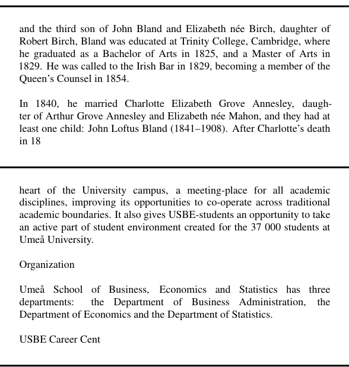
样本 1：……是 John Bland 和 Elizabeth（婚前姓 Birch，Robert Birch 之女）的第三个儿子。Bland 在 Cambridge 的 Trinity College 接受教育，1825 年获文学学士学位，1829 年获文学硕士学位。他于 1829 年取得爱尔兰律师资格，并于 1854 年成为 Queen’s Counsel。
1840 年，他与 Arthur Grove Annesley 和 Elizabeth（婚前姓 Mahon）的女儿 Charlotte Elizabeth Grove Annesley 结婚，他们至少有一个孩子：John Loftus Bland（1841—1908）。Charlotte 于 18……年去世后……
样本 2：……大学校园的中心，是各学科相聚之处，增加跨越传统学科边界合作的机会。它还为 USBE 学生提供机会，积极参与为 Umeå University 的 37,000 名学生创造的学生环境。
组织
Umeå School of Business, Economics and Statistics 有三个系：工商管理系、经济学系和统计学系。
USBE 职业中心……
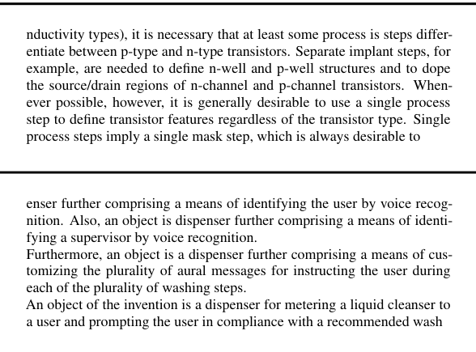
样本 1：……导电类型），至少某些工艺步骤必须区分 p 型和 n 型晶体管。例如，需要独立的离子注入步骤来定义 n 阱与 p 阱结构，并对 n 沟道和 p 沟道晶体管的源／漏区域掺杂。不过，只要可能，通常希望用单一工艺步骤定义晶体管特征，而不受晶体管类型影响。单一工艺步骤意味着单一掩模步骤，这始终是所希望的……
样本 2：……分配器还包括通过语音识别辨认用户的装置。此外，一个目标是使分配器进一步包括通过语音识别辨认监督者的装置。另一个目标是使分配器进一步包括定制多个声音消息的装置，以在多个清洗步骤的每一步中指导用户。本发明的一个目标是提供一种向用户定量供应液体清洁剂的分配器，并提示用户遵循推荐的清洗……
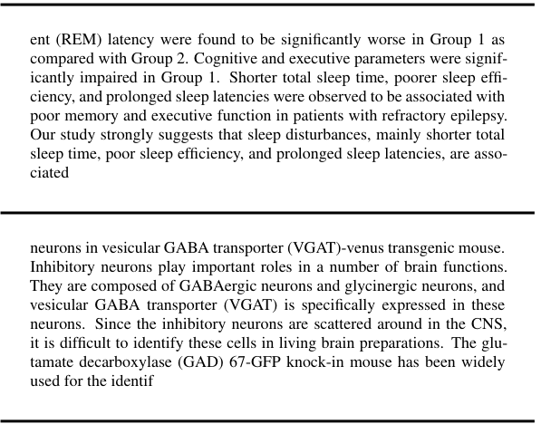
样本 1：……（REM）潜伏期在第 1 组中明显差于第 2 组。第 1 组的认知与执行功能参数显著受损。在难治性癫痫患者中，较短的总睡眠时间、较低的睡眠效率以及延长的入睡潜伏期，被观察到与记忆和执行功能较差有关。我们的研究强烈表明，睡眠障碍，主要是总睡眠时间较短、睡眠效率较低以及入睡潜伏期延长，与……有关。
样本 2：……囊泡 GABA 转运体（VGAT）-venus 转基因小鼠中的神经元。抑制性神经元在多种脑功能中发挥重要作用。它们由 GABA 能神经元和甘氨酸能神经元构成，囊泡 GABA 转运体（VGAT）在这些神经元中特异表达。由于抑制性神经元散布于 CNS，很难在活体脑制备中识别这些细胞。谷氨酸脱羧酶（GAD）67-GFP 敲入小鼠已被广泛用于识别……
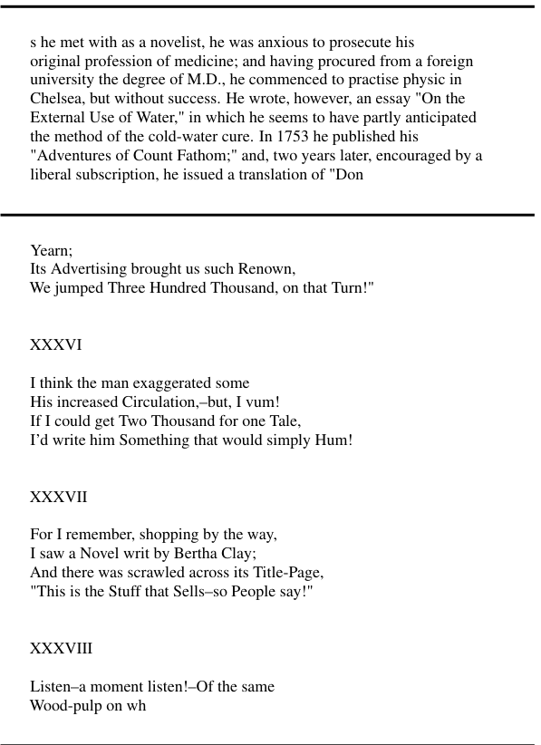
样本 1：……虽然作为小说家取得了成功，他仍急于从事原来的医学职业。在取得一所外国大学的 M.D. 学位之后，他开始在 Chelsea 行医，但未获成功。不过，他写了一篇《论水的外用》的文章，其中似乎部分预见了冷水疗法。1753 年，他出版了《Count Fathom 历险记》；两年后，在大量预订的鼓励下，他推出了《Don……》的译本。
样本 2：渴望；
“广告为我们带来如此声名，
那一回，我们猛增了三十万！”
XXXVI
我想那人有些夸大了
增长的发行量——可是，天哪！
要是一篇故事能给我两千，
我会给他写出轰动的东西！
XXXVII
因为我记得，顺路购物时，
看到一本 Bertha Clay 写的小说；
扉页上潦草地写着：
“这才是能卖出去的东西——人们这么说！”
XXXVIII
听——听一会儿！——用同样的
木浆，印着……
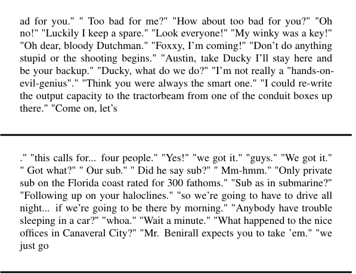
样本 1：“……你真倒霉。”“我倒霉？”“你自己倒霉还差不多！”“哦，不！”“幸好我留了个备用的。”“大家看！”“我的小弟弟是一把钥匙！”“天哪，该死的荷兰人。”“Foxxy，我来了！”“别做傻事，不然就开枪。”“Austin，带上 Ducky，我留在这里给你掩护。”“Ducky，我们怎么办？”“我可不是什么亲力亲为的邪恶天才。”“我一直觉得你更聪明。”“我可以从上面某个管线盒重写牵引光束的输出容量。”“来吧，我们……”
样本 2：“……”“这需要……四个人。”“好！”“我们搞定了。”“伙计们。”“我们搞定了。”“搞定什么？”“我们的潜艇。”“他说潜艇吗？”“嗯。”“佛罗里达海岸唯一额定可下潜 300 噚的私人潜艇。”“潜艇，是潜水艇的意思？”“继续调查你说的盐跃层。”“所以我们得开车赶一整夜……才能早上到那里。”“有人在车里睡不着吗？”“哇。”“等一下。”“Canaveral City 那些漂亮办公室怎么了？”“Benirall 先生希望你们带上它们。”“我们就去……”
样本见原文第 32 页。
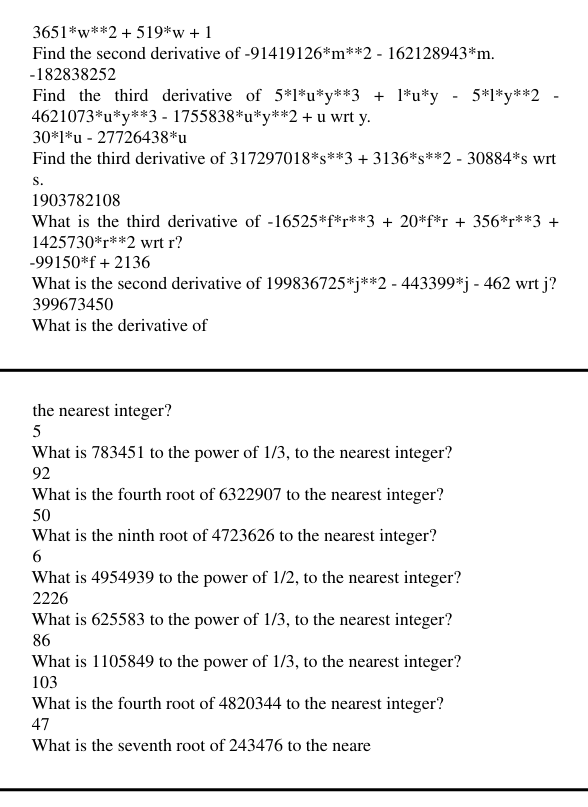
样本 1：3651*w**2 + 519*w + 1
求 -91419126*m**2 - 162128943*m 的二阶导数。-182838252
求 5*l*u*y**3 + l*u*y - 5*l*y**2 - 4621073*u*y**3 - 1755838*u*y**2 + u 关于 y 的三阶导数。30*l*u - 27726438*u
求 317297018*s**3 + 3136*s**2 - 30884*s 关于 s 的三阶导数。1903782108-16525*f*r**3 + 20*f*r + 356*r**3 + 1425730*r**2 关于 r 的三阶导数是什么？-99150*f + 2136199836725*j**2 - 443399*j - 462 关于 j 的二阶导数是什么？399673450
……的导数是什么？
样本 2：……取最接近的整数？
5
783451 的 1/3 次方取最接近的整数是多少？
92
6322907 的四次方根取最接近的整数是多少？
50
4723626 的九次方根取最接近的整数是多少？
6
4954939 的 1/2 次方取最接近的整数是多少？
2226
625583 的 1/3 次方取最接近的整数是多少？
86
1105849 的 1/3 次方取最接近的整数是多少？
103
4820344 的四次方根取最接近的整数是多少？
47
243476 的七次方根取最接近的……
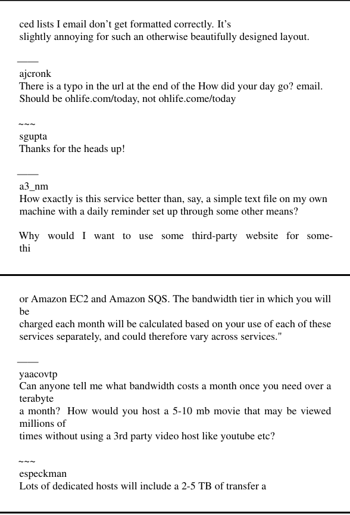
样本 1：……我通过邮件发送的列表格式不正确。对于一个其他方面设计得如此漂亮的布局，这稍微有点烦人。
—— ajcronk
“How did your day go?” 邮件末尾的 URL 有一个拼写错误。应该是 ohlife.com/today，而不是 ohlife.come/today。
~~~ sgupta
谢谢提醒！
—— a3_nm
这个服务到底比我自己机器上的一个简单文本文件好在哪里？我可以用其他方式设置每日提醒。为什么我要为了某……使用第三方网站？
样本 2：……或者 Amazon EC2 和 Amazon SQS。每月向你收费的带宽档位，将根据你对每项服务的使用情况分别计算，因此不同服务的档位可能不同。”
—— yaacovtp
有人能告诉我，每月需要超过 1TB 时，带宽要花多少钱吗？如果不使用 YouTube 等第三方视频托管服务，你会怎样托管一个可能被观看数百万次的 5—10 mb 视频？
~~~ especkman
很多独立主机都包含每……2—5 TB 的传输量。
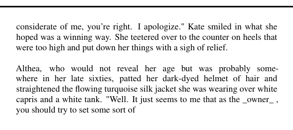
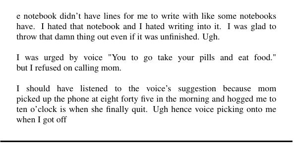
样本 1：“……我不够体贴，你说得对。我道歉。”Kate 露出她希望显得讨人喜欢的微笑。她穿着过高的高跟鞋，摇摇晃晃地走到柜台前，放下东西，松了一口气。
Althea 不愿透露年龄，但大概快七十岁了。她拍了拍染黑后像头盔一样的头发，整了整飘逸的绿松石色丝绸外套，里面穿着白色七分裤与白色背心。“嗯。我只是觉得，作为店主，你应该试着树立某种……”
样本 2：……那本笔记本不像有些本子那样，画了供我写字的横线。我讨厌那本笔记本，也讨厌往里写东西。即使没写完，我也很高兴扔掉了那个该死的东西。呃。
那个声音催我：“你去吃药，再吃点东西。”但我拒绝了，坚持给妈妈打电话。
我本应该听那个声音的建议，因为妈妈早上八点四十五接起电话，直到十点才终于说完。呃，所以我挂断电话后，那个声音就数落我……
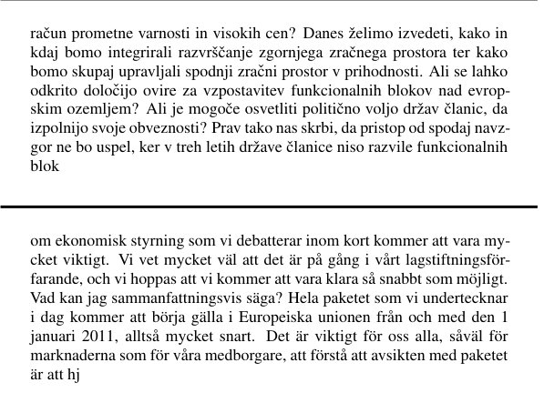
样本 1：……以交通安全和高昂费用为代价？今天我们想知道，如何以及何时整合上层空域的划分，以及未来如何共同管理下层空域。能否公开指出建立覆盖欧洲领土的功能性空域块的障碍？能否阐明成员国履行义务的政治意愿？我们同样担心，自下而上的方法不会成功，因为三年来成员国没有建立功能性空域块……
样本 2：……我们即将讨论的经济治理问题将非常重要。我们很清楚，它正在立法程序中推进，希望能尽快完成。我最后可以说什么？我们今天签署的整个一揽子方案，将从 2011 年 1 月 1 日起在欧盟生效，也就是很快。对于所有人，包括市场和公民，理解这一方案旨在帮助……都很重要。
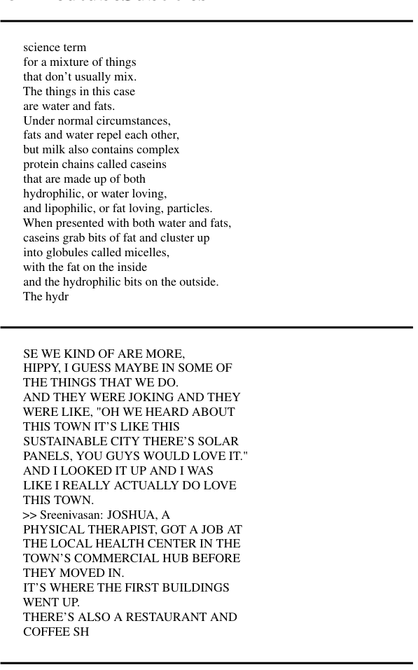
样本 1：一个科学术语，指通常不相混合的物质构成的混合物。这里的物质是水与脂肪。在通常情况下，脂肪和水彼此排斥，但牛奶还包含称为酪蛋白的复杂蛋白质链，它们同时由亲水、也就是喜欢水的部分，以及亲脂、也就是喜欢脂肪的部分构成。当水与脂肪同时出现时，酪蛋白抓住小块脂肪，聚集成称为胶束的小球，脂肪位于内部，亲水部分位于外部。亲水……
样本 2：……因为我们有些更像嬉皮士，我想，可能在我们做的某些事情上是这样。他们开玩笑说：“哦，我们听说有这么一个城镇，它像一座可持续发展的城市，有太阳能板，你们一定会喜欢。”我查了查，心想，我真的确实喜欢这座城镇。
>> Sreenivasan：Joshua 是一名物理治疗师。在他们搬入前，他在镇上商业中心的当地健康中心找到了一份工作。最早的建筑就是在那里建起来的。那里还有一家餐厅和咖啡店……
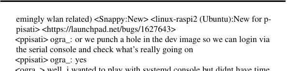
样本 1（接原文第 33 页）：……似乎与 wlan 有关）<Snappy:New> <linux-raspi2 (Ubuntu):New for p-pisati> <https://launchpad.net/bugs/1627643><ppisati> ogra_：或者我们在开发镜像里开个口子，这样就能通过串行控制台登录，检查到底发生了什么。<ppisati> ogra_：是的。<ogra_> 嗯，我想玩一下 systemd 控制台，但还没时间……
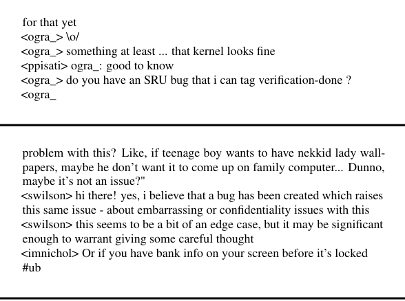
样本 1（续）：……做那个。<ogra_> \o/<ogra_> 至少有点收获……那个内核看起来没问题。<ppisati> ogra_：知道这个就好。<ogra_> 你有可以让我标记为 verification-done 的 SRU bug 吗？<ogra_……
样本 2：……这有什么问题？比如，如果一个十几岁的男孩想用裸女壁纸，也许他不想让它出现在家用电脑上……不知道，也许这不是什么问题？”<swilson> 你好！是的，我认为已经创建了一个 bug，提出了同样的问题——涉及令人尴尬或保密方面的问题。<swilson> 这似乎是一个边缘情况，但可能足够重要，值得仔细思考。<imnichol> 或者如果屏幕锁定前上面有银行信息。#ub……
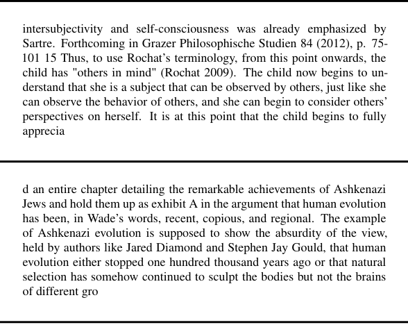
样本 1：主体间性与自我意识已经被 Sartre 强调。即将发表于 Grazer Philosophische Studien 84（2012），第 75—101 页。15 因此，用 Rochat 的术语来说，从这时起，孩子“心中有了他人”（Rochat 2009）。孩子开始理解，她是一个能够被他人观察的主体，就像她能观察他人的行为一样；她也能够开始考虑他人对自己的看法。正是在这时，孩子开始充分理解……
样本 2：……并用整整一章详述 Ashkenazi Jews 的非凡成就，把他们当作论证的首要证据，说明人类演化用 Wade 的话来说是近期的、大量的、区域性的。Ashkenazi 的演化案例，被用来表明 Jared Diamond 和 Stephen Jay Gould 等作者所持观点的荒谬：即人类演化要么在十万年前停止了，要么自然选择不知为何只继续塑造不同群体的身体，却没有塑造大脑……
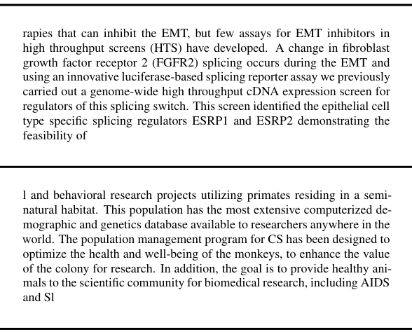
样本 1：……能够抑制 EMT 的疗法，但用于高通量筛选（HTS）的 EMT 抑制剂检测方法很少得到开发。在 EMT 过程中，成纤维细胞生长因子受体 2（FGFR2）的剪接会发生变化；利用一种创新的基于荧光素酶的剪接报告检测方法，我们此前进行了全基因组高通量 cDNA 表达筛选，寻找这一剪接开关的调节因子。该筛选识别出上皮细胞类型特异性的剪接调节因子 ESRP1 和 ESRP2，证明了……的可行性。
样本 2：……以及利用生活在半自然栖息环境中灵长类动物的行为研究项目。这一群体拥有全球研究者可用的最全面的计算机化人口统计与遗传学数据库。CS 的群体管理计划旨在优化猴子的健康与福祉，提升群体的研究价值。此外，目标还包括向科学界提供健康动物，用于包括 AIDS 和 SI……在内的生物医学研究。
样本 1：在降到 90% 水平之前，我想确保假期工资按 100% 支付。谢谢你处理这件事。你看，我现在可以使用电子邮件了，所以在不吸奶、喂奶、换尿布等时候……我可以查看情况！！！
Carol St. Clair
EB 3892
713-853-3989（电话）
713-646-3393（传真）
carol.st.clair@enron.com
Suzanne Adams
07/18/00 05:22 PM
收件人：Carol St Clair/HOU/ECT@ECT
抄送：Taffy Milligan/HOU/ECT@ECT
主题：回复：Carol St. Clair
Carol，我……
样本 2：——原始消息——
发件人：“Prakash Narayanan” <pnarayan@andrew.cmu.edu>@ENRON
发送时间：2001 年 12 月 2 日星期日 9:28 PM
收件人：Kaminski, Vince J
抄送：Crenshaw, Shirley
主题：星期五的演讲
亲爱的 Vince：
你好吗？我知道你现在极其忙碌，但想问一下，我们星期五是否按计划进行。如果能收到你的回复就太好了。
此致，
Prakash
Prakash Narayanan
412-422-3287（家）
412-607-5321（手机）
6315 Forbes Avenue
Apartment # 809
Pittsburg
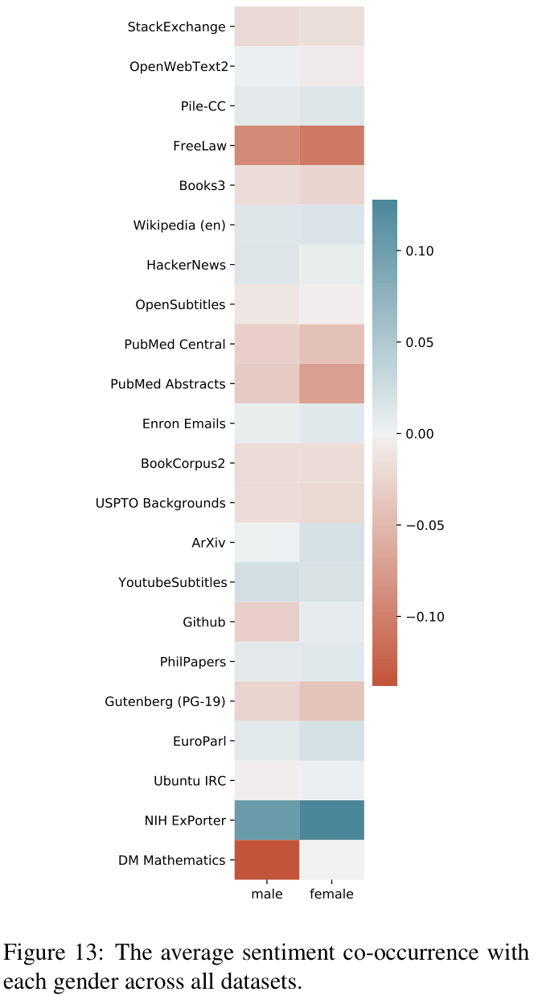
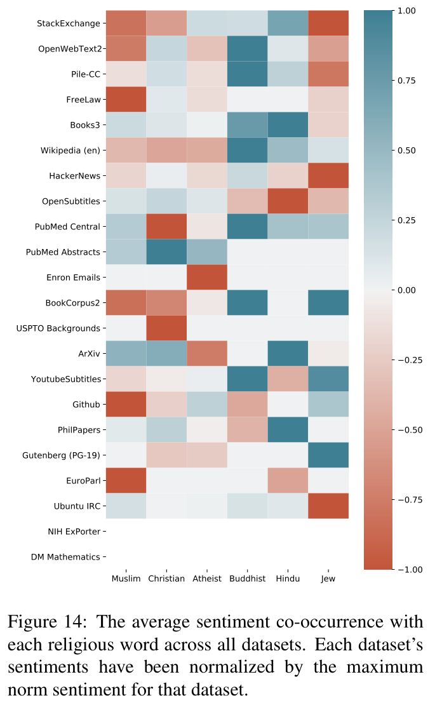
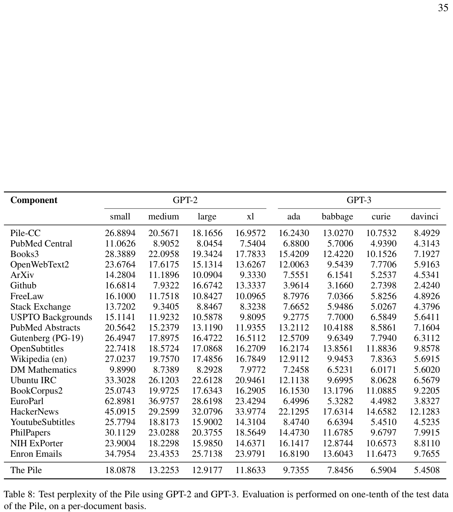
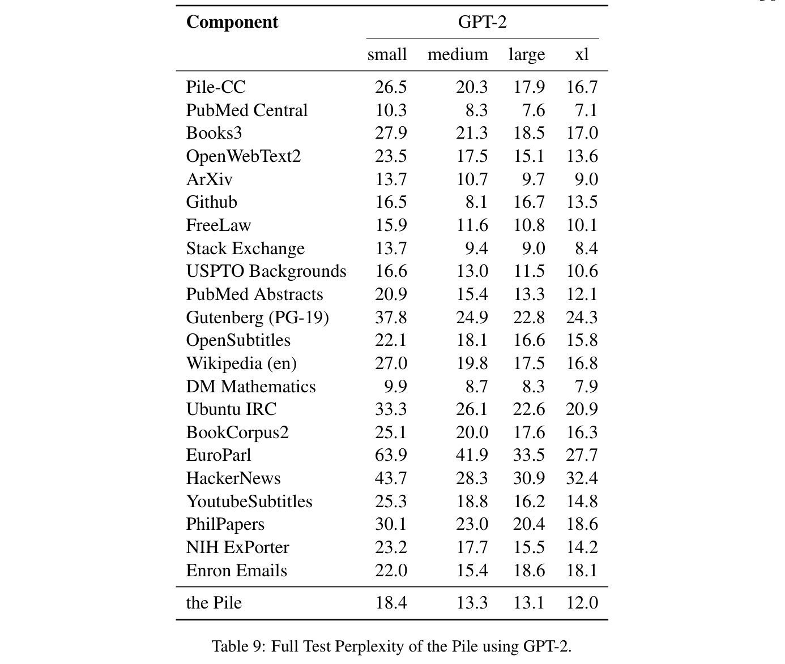
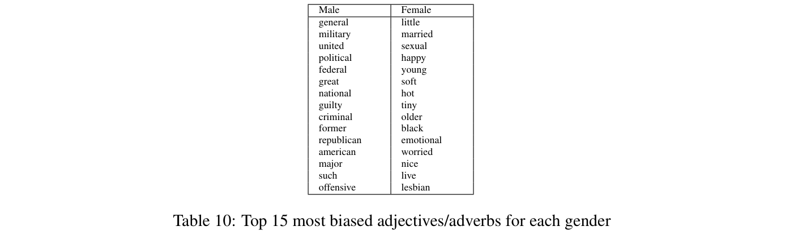
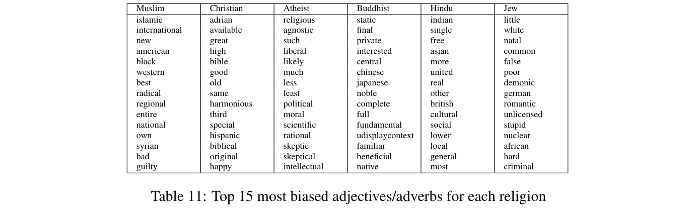
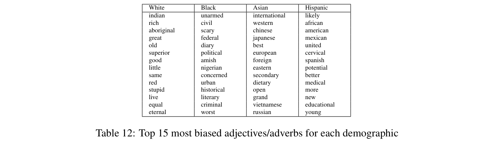